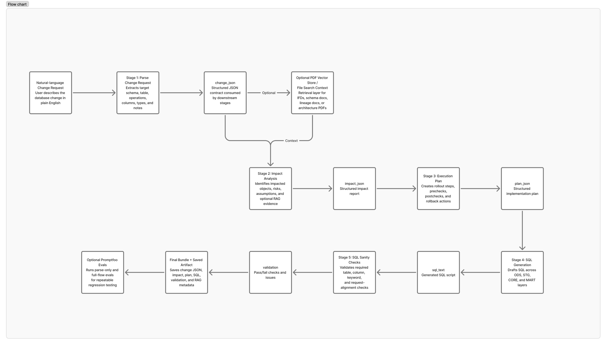
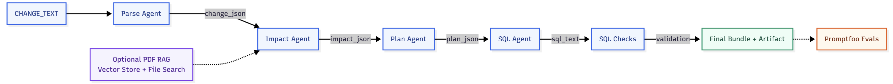
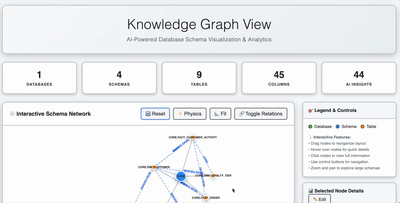
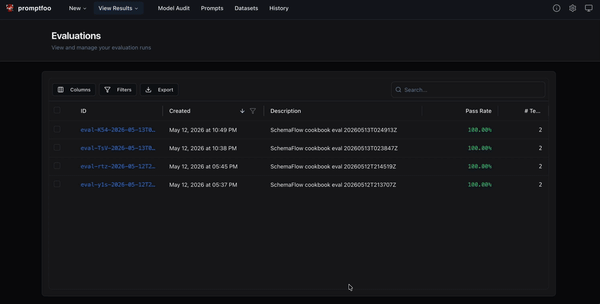

This cookbook walks through an end-to-end AI-assisted database change workflow using the OpenAI Agents SDK.
It demonstrates how OpenAI’s tooling ecosystem can be applied to orchestrate complex, data-intensive workflows across modern enterprise infrastructures. While the current implementation focuses on a retail-oriented schema change and impact-analysis use case, the underlying architectural patterns are domain-agnostic and extensible. The same workflow design can be adapted across industries such as manufacturing, pharmaceuticals, healthcare, logistics, finance, and supply chain operations — wherever structured data workflows, operational reasoning, retrieval-augmented analysis, and automated validation are required.
The running example is a retail loyalty-tier change, but the same pattern applies to many database-change requests where teams need traceable impact analysis and reviewable implementation output.
The workflow starts from a natural-language database change request, converts it into structured JSON, optionally grounds impact analysis with PDF-based File Search context, generates a safe rollout plan, drafts SQL across data platform layers, validates the output with deterministic guardrails, saves a reusable artifact, and optionally evaluates the flow with Promptfoo.
The notebook is intentionally self-contained: all core workflow logic, prompts, guardrails, artifact generation, and eval runtime files are created from notebook cells.
Overview
Schema changes are deceptively simple. A request like “add a nullable column and backfill it” can affect landing tables, staging models, dimensional tables, marts, reporting logic, lineage assumptions, validation checks, rollback procedures, and release sequencing.
The examples use retail customer data because the dependencies are easy to see, but the same kinds of handoffs show up in many analytics and platform teams.
This cookbook demonstrates a practical pattern for using agents as a change-analysis and implementation assistant for database engineering work. Instead of asking one model to produce a final SQL script directly, the workflow breaks the task into explicit stages:
- Parse the natural-language request into structured JSON.
- Analyze impacted objects and operational risks.
- Create a rollout plan with prechecks, postchecks, and rollback guidance.
- Generate SQL across platform layers.
- Run deterministic sanity checks.
- Save a machine-readable artifact.
- Optionally run Promptfoo evals against the current flow.
The result is not just a generated SQL script. It is an auditable bundle containing the interpreted change request, impact analysis, plan, SQL, validation results, optional RAG evidence summaries, and eval outputs.
Why This Matters
Database change requests often move through several handoffs: product owners describe the need, data engineers interpret it, platform teams assess risk, analytics engineers propagate the field downstream, and reviewers check whether the change is safe. Important context can be lost at each step.
SchemaFlow addresses this by turning a free-form change request into a structured, inspectable workflow.
This matters because database changes can create hidden failure modes:
- A column added to ODS may not be propagated into staging, core, or marts.
- A nullable field may accidentally be generated as
NOT NULL. - Backfill logic may be omitted even though the request asks for historical population.
- Index requirements may be missed.
- Downstream reporting dependencies may be unknown unless reference documentation is consulted.
- Generated SQL may look plausible but fail basic consistency checks.
This cookbook shows a pattern for reducing those risks with staged agent reasoning, typed outputs, optional retrieval context, deterministic guardrails, saved artifacts, and repeatable evals.
Key Benefits
- Structured interpretation – Converts natural-language database requests into a normalized
change_jsoncontract. - Separation of responsibilities – Uses specialized agents for parse, impact analysis, rollout planning, and SQL generation.
- Optional RAG grounding – Lets the impact-analysis agent use File Search over an uploaded PDF, such as an IFD, schema spec, or lineage document.
- Typed stage outputs – Uses Pydantic models and Agents SDK output schemas for parse, impact, and plan stages.
- Guardrail-first workflow – Adds deterministic checks between stages so obvious failures are caught before downstream steps consume bad state.
- Traceability – Emits OpenAI Agents SDK traces and spans for agent runs, guardrails, artifact generation, and eval execution.
- Portable artifacts – Saves the final workflow bundle as JSON under
artifacts/notebook_runs/. - Eval-ready design – Generates Promptfoo provider, assertion, config, and result files from the live notebook state.
- No database side effects – Produces draft SQL and validation output without executing against a live database.
What You’ll Build
By the end of this notebook, you will have a working SchemaFlow pipeline that produces:
-
A parsed database change request:
- title
- domain
- target schema
- target table
- normalized operations
- notes
-
An impact-analysis report:
- impacted tables, columns, indexes, views, or relationships
- risks
- assumptions
- optional File Search evidence summaries
-
A rollout plan:
- implementation steps
- prechecks
- postchecks
- rollback actions
-
A draft SQL script with four required sections:
LANDING (ODS)STAGING (STG)CORE (DIM/FACT/VIEW)MARTS (SERVING)
-
A validation result:
- expected table checks
- expected column checks
- required keyword checks such as
ALTER TABLE,UPDATE, orCREATE INDEX
-
A saved JSON artifact:
- change request
- impact analysis
- plan
- SQL
- validation
- optional RAG metadata
-
A Promptfoo eval harness:
- Python provider
- Python assertion file
- generated Promptfoo config
- parse-only eval case
- full-flow eval case
- timestamped JSON and HTML eval reports
Introduction: Use Case and Solution
This cookbook focuses on a common enterprise data-engineering scenario: a stakeholder requests a database schema change in natural language, and the data team needs to turn that request into an implementation-ready plan.
Here, the retail domain is just a concrete way to make the workflow tangible. The same staged approach can be adapted to other source systems, data products, and review processes.
The default request in this notebook is:
Add LOYALTY_TIER VARCHAR(20) to ODS.ODS_CUSTOMER_PROFILE as nullable.
Backfill from CORE.DIM_CUSTOMER on CUSTOMER_ID where IS_CURRENT=true.
Add a non-unique index on (CUSTOMER_ID, LOYALTY_TIER).A human data engineer would typically need to answer several questions before writing production SQL:
- What table and schema are being changed?
- What exact column, type, and nullability were requested?
- Is historical backfill required?
- Does the request imply an index?
- Which downstream layers need the field propagated?
- What risks should reviewers look for?
- What checks should be run before and after deployment?
- What rollback steps are reasonable?
- Does the generated SQL include the required elements?
SchemaFlow implements this as a staged agent workflow. Each stage creates a typed intermediate output that the next stage consumes. Deterministic checks then validate the outputs before the notebook saves the final bundle and optionally runs evals.
Workflow Overview
At a high level, SchemaFlow follows this sequence:

The notebook is organized so readers can run the core workflow first and then decide whether they want to run the optional Promptfoo evaluation section.
Table of Contents
Conceptual Guide
- Overview
- Why This Matters
- Key Benefits
- What You’ll Build
- Introduction: Use Case and Solution
- Workflow Overview
- Architecture - Design Patterns
- System Design
- Execution Workflow
Notebook Implementation
- Environment Setup
- Input
- Optional PDF RAG Context
- Stages 1-2: Parse Change Request + Impact Analysis
- Stages 3-4: Execution Plan + SQL Generation
- Stage 5: Lightweight SQL Sanity Checks
- Final Bundle
- Save Artifact
- Optional Cleanup
- Evaluate the Flow with Promptfoo
Reference
Architecture - Design Patterns
SchemaFlow uses a staged, contract-driven agent architecture. The goal is to avoid treating the model as a single black-box SQL generator. Instead, each stage has a narrow responsibility and produces an output that can be inspected, validated, traced, and reused.
1. Agent Specialization
Each agent performs one primary task:
| Agent | Responsibility | Main Output |
|---|---|---|
| Parse Agent | Extract structured fields from the natural-language request | change_json |
| Impact Agent | Identify affected objects, assumptions, and risks | impact_json |
| Plan Agent | Convert the change and impact into rollout steps | plan_json |
| SQL Agent | Draft SQL across data platform layers | sql_text |
This specialization makes the workflow easier to debug. If SQL is missing a column, you can inspect whether the issue started in parsing, impact analysis, planning, or SQL generation.
2. Typed Output Contracts
The notebook defines Pydantic models for the structured stages:
ChangeRequestModelImpactModelPlanModel
Those models are wrapped with AgentOutputSchema so the Agents SDK knows the expected output shape. The workflow also normalizes outputs after model calls to ensure expected keys exist before downstream stages run.
3. Retrieval-Augmented Impact Analysis
The PDF RAG section is optional. When PDF_PATH is set, the notebook:
- Creates an OpenAI vector store.
- Uploads the PDF.
- Lets OpenAI parse, chunk, embed, and index it.
- Gives the Impact Agent a
FileSearchTool. - Captures a summary of returned File Search results.
This is useful when the change request needs grounding in an IFD, schema document, lineage file, data contract, or architecture reference.
4. Guardrail Gates Between Stages
The notebook adds deterministic checks after major stages:
- Stages 1-2 guardrails validate parse and impact outputs.
- Stages 3-4 guardrails validate plan completeness, data type propagation, and nullability handling.
- Stage 5 SQL checks validate expected table, column, and SQL keyword presence.
- Post-artifact checks verify the saved JSON artifact exists and round-trips.
- Pre-Promptfoo checks verify the notebook state is ready for evals.
These checks do not replace human review, but they catch common silent failures early.
5. Artifact-Centered Execution
The final bundle is the main workflow artifact. It captures the state needed to review or debug the run:
bundle = {
"summary": ...,
"rag": ...,
"change_json": ...,
"impact_json": ...,
"plan": ...,
"sql": ...,
"validation": ...
}The notebook saves this bundle under artifacts/notebook_runs/.
6. Eval Runtime Generated from Notebook State
Promptfoo runs in a separate process, so it cannot directly read variables from the active notebook kernel. To solve this, Section 10 writes a small reusable Python module and Promptfoo runtime files from the current notebook state.
This ensures that prompt edits, CHANGE_TEXT edits, and model configuration changes are reflected when the eval files are regenerated.
System Design
Component Architecture

Primary Runtime Objects
| Object | Created in | Purpose |
|---|---|---|
CHANGE_TEXT |
Input section | The natural-language database change request |
change_json |
Stage 1 | Structured interpretation of the request |
rag_vector_store_id |
Optional PDF RAG section | Hosted vector store ID for uploaded PDF context |
rag_file_search_results |
Stage 2 | Summary of File Search results returned to the Impact Agent |
impact_json |
Stage 2 | Impacted objects, risks, and assumptions |
plan_json |
Stage 3 | Rollout plan, checks, and rollback guidance |
sql_text |
Stage 4 | Draft SQL script |
validation |
Stage 5 | Deterministic SQL sanity-check result |
bundle |
Final Bundle section | Consolidated workflow output |
out_path |
Save Artifact section | Saved JSON artifact path |
promptfoo_config |
Promptfoo section | Generated eval configuration |
Important Boundary
SchemaFlow generates draft implementation artifacts. It does not execute SQL against a database, apply migrations, open pull requests, or modify production systems.
Execution Workflow
Run the notebook in order.
Core Workflow
-
Environment Setup
- Imports dependencies.
- Verifies the OpenAI Agents SDK version.
- Reads
OPENAI_API_KEY. - Configures tracing and model selection.
-
Input
- Defines
CHANGE_TEXT. - This is the only required business input for the core workflow.
- Defines
-
Optional PDF RAG Context
- Leave
PDF_PATH = Noneto run without retrieval. - Set
PDF_PATHto a local PDF to enable File Search context for impact analysis.
- Leave
-
Stages 1-2
- Parse the change request.
- Analyze impact.
- Optionally use File Search during impact analysis.
-
Stages 1-2 Guardrails
- Confirm parse output is well-formed.
- Confirm impact output includes the target.
- Confirm impacted objects contain required fields.
-
Stages 3-4
- Generate an execution plan.
- Generate SQL across landing, staging, core, and mart layers.
-
Stages 3-4 Guardrails
- Confirm plan sections are populated.
- Confirm data type propagation.
- Confirm nullability behavior matches the request.
-
Stage 5 SQL Sanity Checks
- Check for empty SQL.
- Check expected target table and columns.
- Check required SQL actions implied by the request.
-
Final Bundle and Artifact
- Assemble the full output bundle.
- Save it as JSON.
- Verify the artifact round-trips successfully.
Optional Eval Workflow
-
Pre-Promptfoo Checks
- Confirm the notebook state is ready for evals.
-
Promptfoo Runtime Generation
- Create a reusable SchemaFlow core module.
- Write a Promptfoo provider.
- Write a Promptfoo assertion file.
- Generate Promptfoo test cases and config.
-
Promptfoo Eval Execution
- Run parse-only and full-flow evals.
- Save timestamped JSON and HTML reports.
- Refresh
schemaflow_cookbook_eval_latest.*aliases.
1) Environment Setup
This section prepares the runtime for the SchemaFlow workflow.
The setup cell does the following:
- Imports standard Python utilities used throughout the notebook.
- Imports the OpenAI client.
- Imports the OpenAI Agents SDK primitives:
AgentRunnerRunConfigAgentOutputSchemaFileSearchTool- tracing and span helpers
- Verifies that the installed
openai-agentspackage meets the minimum required version. - Reads
OPENAI_API_KEYfrom the environment or prompts for it. - Sets the model with
OPENAI_MODEL, defaulting togpt-5.5. - Creates a trace group ID so all related agent runs and guardrail spans can be grouped together.
The workflow intentionally enables sensitive trace payloads for this demo so prompts, outputs, eval bundles, and tool data are visible in traces. For production usage, review this setting before handling private data.
%pip install --quiet -U "openai" "openai-agents>=0.17.0"import os
import json
import re
import uuid
from datetime import datetime, timezone
from getpass import getpass
from importlib.metadata import PackageNotFoundError, version
try:
from openai import OpenAI
except Exception as e:
raise RuntimeError("Install dependency first: pip install -U openai") from e
MIN_AGENTS_SDK_VERSION = "0.17.0"
try:
from agents import (
Agent,
AgentOutputSchema,
FileSearchTool,
Runner,
RunConfig,
custom_span,
flush_traces,
function_span,
guardrail_span,
trace,
)
except Exception as e:
raise RuntimeError(
'Install or upgrade the OpenAI Agents SDK first: pip install -U "openai-agents>=0.17.0"'
) from e
def _version_tuple(value):
match = re.match(r"^(\d+)\.(\d+)\.(\d+)", str(value or ""))
return tuple(int(part) for part in match.groups()) if match else (0, 0, 0)
try:
AGENTS_SDK_VERSION = version("openai-agents")
except PackageNotFoundError as e:
raise RuntimeError('Install the OpenAI Agents SDK first: pip install -U "openai-agents>=0.17.0"') from e
if _version_tuple(AGENTS_SDK_VERSION) < _version_tuple(MIN_AGENTS_SDK_VERSION):
raise RuntimeError(
f'OpenAI Agents SDK {MIN_AGENTS_SDK_VERSION}+ is required; found {AGENTS_SDK_VERSION}. '
'Upgrade with: pip install -U "openai-agents>=0.17.0"'
)
def _clean_openai_api_key(value):
key = (value or "").strip()
if not key:
raise RuntimeError("OPENAI_API_KEY is required.")
return key
if not os.getenv("OPENAI_API_KEY", "").strip():
os.environ["OPENAI_API_KEY"] = getpass("Enter your OpenAI API key: ")
os.environ["OPENAI_API_KEY"] = _clean_openai_api_key(os.getenv("OPENAI_API_KEY"))
OPENAI_ORG_ID = os.getenv("OPENAI_ORG_ID", "").strip()
if OPENAI_ORG_ID:
os.environ["OPENAI_ORG_ID"] = OPENAI_ORG_ID
MODEL = os.getenv("OPENAI_MODEL", "gpt-5.5")
TRACE_INCLUDE_SENSITIVE_DATA = os.getenv("OPENAI_AGENTS_TRACE_INCLUDE_SENSITIVE_DATA", "false").lower() in {"1", "true", "yes", "on"}
os.environ["OPENAI_AGENTS_TRACE_INCLUDE_SENSITIVE_DATA"] = "true" if TRACE_INCLUDE_SENSITIVE_DATA else "false"
SCHEMAFLOW_TRACE_GROUP_ID = os.getenv("SCHEMAFLOW_TRACE_GROUP_ID") or (
"schemaflow-cookbook-" + datetime.now(timezone.utc).strftime("%Y%m%dT%H%M%SZ") + "-" + uuid.uuid4().hex[:8]
)
os.environ["SCHEMAFLOW_TRACE_GROUP_ID"] = SCHEMAFLOW_TRACE_GROUP_ID
client = OpenAI(api_key=os.environ["OPENAI_API_KEY"])
print("Using model:", MODEL)
print("OpenAI Agents SDK:", AGENTS_SDK_VERSION)
print("OpenAI organization:", os.getenv("OPENAI_ORG_ID") or "(default for API key)")
print("Trace group:", SCHEMAFLOW_TRACE_GROUP_ID)
print("Trace payloads include prompts/outputs:", TRACE_INCLUDE_SENSITIVE_DATA)from concurrent.futures import ThreadPoolExecutor
from pydantic import BaseModel, ConfigDict, Field
class SchemaFlowBaseModel(BaseModel):
model_config = ConfigDict(extra="allow")
class OperationModel(SchemaFlowBaseModel):
op: str
details: dict = Field(default_factory=dict)
class ChangeRequestModel(SchemaFlowBaseModel):
title: str | None = None
domain: str | None = None
target_schema: str | None = None
target_table: str | None = None
operations: list[OperationModel] = Field(default_factory=list)
notes: list = Field(default_factory=list)
class ImpactObjectModel(SchemaFlowBaseModel):
type: str
name: str
reason: str
source: str
class ImpactModel(SchemaFlowBaseModel):
impacted_objects: list[ImpactObjectModel] = Field(default_factory=list)
risks: list[str] = Field(default_factory=list)
assumptions: list[str] = Field(default_factory=list)
class PlanStepModel(SchemaFlowBaseModel):
id: str
description: str
class PlanModel(SchemaFlowBaseModel):
plan_steps: list[PlanStepModel] = Field(default_factory=list)
prechecks: list[str] = Field(default_factory=list)
postchecks: list[str] = Field(default_factory=list)
rollback: list[str] = Field(default_factory=list)
CHANGE_OUTPUT_SCHEMA = AgentOutputSchema(ChangeRequestModel, strict_json_schema=False)
IMPACT_OUTPUT_SCHEMA = AgentOutputSchema(ImpactModel, strict_json_schema=False)
PLAN_OUTPUT_SCHEMA = AgentOutputSchema(PlanModel, strict_json_schema=False)
def _parse_json_text(text: str):
text = (text or "{}").strip()
if text.startswith("```"):
text = re.sub(r"^```(?:json)?\s*", "", text)
text = re.sub(r"\s*```$", "", text).strip()
try:
return json.loads(text)
except json.JSONDecodeError:
match = re.search(r"\{.*\}", text, flags=re.DOTALL)
if not match:
raise
return json.loads(match.group(0))
def _model_dump(value):
if value is None or isinstance(value, (str, int, float, bool, bytes)):
return value
if isinstance(value, type):
return value
if hasattr(value, "model_dump"):
try:
return value.model_dump()
except TypeError:
pass
if hasattr(value, "to_dict"):
try:
return value.to_dict()
except TypeError:
pass
if hasattr(value, "__dict__"):
try:
return {k: v for k, v in vars(value).items() if not k.startswith("_")}
except TypeError:
pass
return value
def _agent_output_to_json(value):
value = _model_dump(value)
if isinstance(value, dict):
return value
if isinstance(value, str):
return _parse_json_text(value)
return json.loads(json.dumps(value, default=str))
def _agent_output_to_text(value):
value = _model_dump(value)
if isinstance(value, str):
return value.strip()
return json.dumps(value, ensure_ascii=False)
def _trace_metadata(metadata: dict | None = None):
cleaned = {}
for key, value in (metadata or {}).items():
if value is None:
cleaned[str(key)] = ""
elif isinstance(value, bool):
cleaned[str(key)] = "true" if value else "false"
elif isinstance(value, (dict, list, tuple, set)):
cleaned[str(key)] = json.dumps(value, ensure_ascii=False, default=str)
else:
cleaned[str(key)] = str(value)
return cleaned
def _schemaflow_run_config(workflow_name: str, metadata: dict | None = None):
return RunConfig(
workflow_name=workflow_name,
group_id=SCHEMAFLOW_TRACE_GROUP_ID,
trace_include_sensitive_data=TRACE_INCLUDE_SENSITIVE_DATA,
trace_metadata=_trace_metadata({"notebook": "schemaflow_cookbook", **(metadata or {})}),
)
def _runner_run_sync(agent, prompt: str, *, workflow_name: str, metadata: dict | None = None, max_turns: int = 4):
kwargs = {"run_config": _schemaflow_run_config(workflow_name, metadata), "max_turns": max_turns}
try:
return Runner.run_sync(agent, prompt, **kwargs)
except RuntimeError as exc:
if "event loop" not in str(exc).lower():
raise
with ThreadPoolExecutor(max_workers=1) as pool:
return pool.submit(lambda: Runner.run_sync(agent, prompt, **kwargs)).result()
def run_schemaflow_json_agent(*, name, instructions, prompt, output_schema, model=MODEL, tools=None, workflow_name=None, metadata=None):
agent = Agent(name=name, instructions=instructions, model=model, output_type=output_schema, tools=tools or [])
result = _runner_run_sync(agent, prompt, workflow_name=workflow_name or name, metadata={"agent": name, **(metadata or {})})
return _agent_output_to_json(result.final_output), result
def run_schemaflow_text_agent(*, name, instructions, prompt, model=MODEL, tools=None, workflow_name=None, metadata=None):
agent = Agent(name=name, instructions=instructions, model=model, tools=tools or [])
result = _runner_run_sync(agent, prompt, workflow_name=workflow_name or name, metadata={"agent": name, **(metadata or {})})
return _agent_output_to_text(result.final_output), result
def _collect_file_search_results(value):
results = []
seen = set()
def visit(node):
if node is None or isinstance(node, (str, int, float, bool, bytes)):
return
if isinstance(node, type) or callable(node):
return
node_id = id(node)
if node_id in seen:
return
seen.add(node_id)
node = _model_dump(node)
if node is None or isinstance(node, (str, int, float, bool, bytes)):
return
if isinstance(node, type) or callable(node):
return
if isinstance(node, dict):
if node.get("type") == "file_search_call":
for result in node.get("results", []) or []:
result = _model_dump(result)
if isinstance(result, dict):
text = result.get("text") or result.get("content") or ""
if isinstance(text, list):
text = "\n".join(str(x) for x in text)
results.append({"file_id": result.get("file_id"), "filename": result.get("filename") or result.get("file_name") or result.get("title"), "score": result.get("score"), "text_preview": str(text)[:1200]})
for child in node.values():
visit(child)
elif isinstance(node, (list, tuple, set)):
for child in node:
visit(child)
visit(value)
return results
def agent_file_search_results(run_result):
return _collect_file_search_results(run_result)
def trace_function_result(name: str, *, input_obj=None, output_obj=None):
with function_span(
name,
input=json.dumps(input_obj, ensure_ascii=False, default=str) if input_obj is not None else None,
output=json.dumps(output_obj, ensure_ascii=False, default=str) if output_obj is not None else None,
):
pass
def pretty(obj):
print(json.dumps(obj, indent=2, ensure_ascii=False))2) Input
This section defines the database change request that SchemaFlow will process. Think of it as the compact ticket, issue, or message a data team might receive before turning the request into implementation details.
The default request asks the workflow to:
- Add
LOYALTY_TIER VARCHAR(20)toODS.ODS_CUSTOMER_PROFILE. - Treat the new column as nullable.
- Backfill from
CORE.DIM_CUSTOMER. - Join on
CUSTOMER_ID. - Filter the source to current records with
IS_CURRENT=true. - Add a non-unique index on
(CUSTOMER_ID, LOYALTY_TIER).
This input is intentionally compact but rich enough to exercise the full workflow:
- parsing target schema and table
- extracting column name, type, and nullability
- recognizing backfill requirements
- recognizing index requirements
- generating multi-layer SQL
- running validation checks for expected table, column, and SQL actions
CHANGE_TEXT = """Add LOYALTY_TIER VARCHAR(20) to ODS.ODS_CUSTOMER_PROFILE as nullable.
Backfill from CORE.DIM_CUSTOMER on CUSTOMER_ID where IS_CURRENT=true.
Add a non-unique index on (CUSTOMER_ID, LOYALTY_TIER)."""
print(CHANGE_TEXT)3) Optional PDF RAG Context
SchemaFlow can run with or without retrieval context, so readers can start with the request alone and add reference docs only when the change needs them.
The sample PDF path in the code cell below points to a file included in the cookbook folder under data/, not to bytes embedded inside the notebook. Leave PDF_PATH = None for static article previews or generic runs.
With the default PDF_PATH = None, the notebook uses only the natural-language change request. This is enough to demonstrate the core staged workflow.
Set PDF_PATH to a local PDF when you want the Impact Agent to ground its analysis in reference material, such as:
- interface design documents
- schema specifications
- lineage documentation
- data contracts
- platform architecture notes
- downstream dependency documentation
When a PDF is configured, this section:
- Validates that the file exists and is a PDF.
- Creates an OpenAI vector store with a one-day expiration policy.
- Uploads the PDF to the vector store.
- Lets OpenAI handle parsing, chunking, embedding, and retrieval.
- Stores the vector store ID for the Impact Agent.
- Later summarizes any File Search results returned during impact analysis.
This keeps the cookbook lightweight because it does not require local embedding models, Chroma, Neo4j, LangGraph, or project-specific Python modules.
from pathlib import Path
# Optional PDF RAG example.
# The GitHub repo includes this sample PDF under schemaflow_cookbook/data.
# When running from a repo checkout in the cookbook folder, uncomment the path below to upload it to File Search.
# For meaningful retrieval hits, pair it with the LOYALTY_TIER change request used in this notebook.
PDF_PATH = None
# PDF_PATH = "data/sample_customer_loyalty_ifd.pdf"
RAG_MAX_RESULTS = 6
rag_vector_store = None
rag_vector_store_id = None
rag_vector_store_file = None
rag_file_search_results = []
impact_response = None
def create_pdf_vector_store(pdf_path):
pdf_path = Path(pdf_path).expanduser().resolve()
if not pdf_path.exists():
raise FileNotFoundError(f"PDF not found: {pdf_path}")
if pdf_path.suffix.lower() != ".pdf":
raise ValueError(f"Expected a PDF file, got: {pdf_path}")
with trace("SchemaFlow PDF Vector Store", group_id=SCHEMAFLOW_TRACE_GROUP_ID, metadata={"step": "pdf_vector_store", "pdf_path": str(pdf_path)}):
with custom_span("Create vector store", {"pdf_path": str(pdf_path)}):
vector_store = client.vector_stores.create(name=f"schemaflow-cookbook-{datetime.now(timezone.utc).strftime('%Y%m%dT%H%M%SZ')}", expires_after={"anchor": "last_active_at", "days": 1})
with custom_span("Upload PDF to vector store", {"vector_store_id": vector_store.id, "pdf_path": str(pdf_path)}):
with pdf_path.open("rb") as handle:
vector_store_file = client.vector_stores.files.upload_and_poll(vector_store_id=vector_store.id, file=handle)
trace_function_result("PDF vector store ready", input_obj={"pdf_path": str(pdf_path)}, output_obj={"vector_store_id": vector_store.id, "status": getattr(vector_store_file, "status", "unknown")})
flush_traces()
return vector_store, vector_store_file
if PDF_PATH:
rag_vector_store, rag_vector_store_file = create_pdf_vector_store(PDF_PATH)
rag_vector_store_id = rag_vector_store.id
print("Created vector store:", rag_vector_store_id)
print("Uploaded PDF status:", getattr(rag_vector_store_file, "status", "unknown"))
else:
print("No PDF configured. Leave PDF_PATH as None to run without RAG, or set it to a local PDF path.")4) Stages 1-2 - Parse Change Request + Impact Analysis
This section runs the first two agent stages back to back. Together, they answer two practical questions: what exactly was requested, and what else could be affected?
Stage 1: Parse Change Request
The Parse Agent converts CHANGE_TEXT into a structured change_json object.
Expected fields include:
titledomaintarget_schematarget_tableoperationsnotes
This stage creates the normalized contract that every downstream stage consumes. If the parse step misses the target table, column, data type, nullability, backfill, or index intent, later stages may produce incomplete output. That is why the notebook validates this stage immediately afterward.
Stage 2: Impact Analysis
The Impact Agent consumes change_json and produces impact_json.
Expected fields include:
impacted_objectsrisksassumptions
If PDF_PATH was configured earlier, the Impact Agent also receives a FileSearchTool connected to the uploaded PDF vector store. This lets the model search reference documentation before returning impact claims.
The output is intentionally conservative. When the agent is uncertain, it should call out assumptions and risks instead of inventing undocumented certainty.
Impact Dashboard Preview
The impact-analysis stage produces structured impact_json that can be visualized as a graph of affected objects and relationships.
The preview below shows the kind of customer loyalty lineage graph built in the optional Neo4j dashboard section later in the notebook. Run that section to generate the local graph UI from the sample knowledge-graph seed and inspect impacted objects interactively.

# =============================================================
# Stage 1 - Parse Change Request
# =============================================================
print("=" * 60)
print("Stage 1 - Parse Change Request")
print("=" * 60)
PARSE_SYSTEM = """
You are a precise information extraction system for database change requests.
Return STRICT JSON only (no prose, no code fences, no comments).
Required keys:
{
"title": str,
"domain": str|null,
"target_schema": str|null,
"target_table": str|null,
"operations": [{"op": str, "details": object}],
"notes": []
}
Rules:
- Use lowercase op names.
- If schema/table unknown, set null.
- Keep details explicit and typed where possible.
""".strip()
parse_user = "Change Request:\n\n" + CHANGE_TEXT
change_json, parse_agent_result = run_schemaflow_json_agent(name="SchemaFlow Parse Agent", instructions=PARSE_SYSTEM, prompt=parse_user, output_schema=CHANGE_OUTPUT_SCHEMA, workflow_name="SchemaFlow Stage 1 Parse", metadata={"stage": "parse_change_request"})
if isinstance(change_json, dict):
change_json.setdefault("title", None)
change_json.setdefault("domain", None)
change_json.setdefault("target_schema", None)
change_json.setdefault("target_table", None)
if not isinstance(change_json.get("operations"), list):
change_json["operations"] = [change_json.get("operations")] if change_json.get("operations") else []
if not isinstance(change_json.get("notes"), list):
change_json["notes"] = []
pretty(change_json)
# =============================================================
# Stage 2 - Impact Analysis
# =============================================================
print("\n" + "=" * 60)
print("Stage 2 - Impact Analysis")
print("=" * 60)
IMPACT_SYSTEM = """
You are a cautious impact analysis assistant.
Inputs:
- change_json: normalized change request.
- optional File Search context from an uploaded IFD/reference PDF.
Task:
Return JSON exactly as:
{
"impacted_objects": [
{"type":"table|column|fk|index|view","name":str,"reason":str,"source":"file_search|ifd|inference"}
],
"risks": [str],
"assumptions": [str]
}
Rules:
- Be conservative when uncertain.
- Call out data quality/backfill risks explicitly.
- If File Search context is available, use it to ground table, column, and downstream-impact claims.
""".strip()
impact_user_parts = ["CHANGE_JSON:\n" + json.dumps(change_json, ensure_ascii=False)]
impact_tools = []
if rag_vector_store_id:
impact_tools.append(FileSearchTool(vector_store_ids=[rag_vector_store_id], max_num_results=RAG_MAX_RESULTS, include_search_results=True))
impact_user_parts.append("Use the file_search tool against the uploaded PDF to look for relevant IFD, schema, table, column, lineage, and downstream dependency context before returning JSON.")
impact_json, impact_agent_result = run_schemaflow_json_agent(name="SchemaFlow Impact Agent", instructions=IMPACT_SYSTEM, prompt="\n\n".join(impact_user_parts), output_schema=IMPACT_OUTPUT_SCHEMA, tools=impact_tools, workflow_name="SchemaFlow Stage 2 Impact Analysis", metadata={"stage": "impact_analysis", "rag_enabled": bool(rag_vector_store_id)})
impact_response = impact_agent_result
try:
rag_file_search_results = agent_file_search_results(impact_agent_result)
except Exception as exc:
rag_file_search_results = []
print(f"File Search result summary skipped: {type(exc).__name__}: {exc}")
if rag_vector_store_id:
print("File Search results returned:", len(rag_file_search_results))
for i, result in enumerate(rag_file_search_results, start=1):
print(f"{i}. {result.get('filename') or result.get('file_id')} score={result.get('score')}")
if isinstance(impact_json, dict):
impact_json.setdefault("impacted_objects", [])
impact_json.setdefault("risks", [])
impact_json.setdefault("assumptions", [])
pretty(impact_json)
flush_traces()Stages 1-2 Output Guardrails
This guardrail cell performs deterministic checks on the Parse and Impact outputs before the workflow continues.
The checks verify that:
change_jsoncontains a target schema.change_jsoncontains a target table.change_json.operationsis a non-empty list.impact_json.impacted_objectscontains at least one object.- The impact output references the parsed target table.
- Each impacted object has basic required fields such as type, name, and reason.
These checks are deliberately lightweight. They do not prove that the analysis is complete, but they catch obvious failure modes before the Plan Agent or SQL Agent consumes malformed or incomplete state.
# Stages 1-2 Output Guardrails - inspects change_json (Parse) and impact_json (Impact).
stages_1_2_guardrails = []
with trace("SchemaFlow Stages 1-2 Guardrails", group_id=SCHEMAFLOW_TRACE_GROUP_ID, metadata={"stage": "stages_1_2_guardrails"}):
def _check(name, ok, detail=""):
ok = bool(ok)
stages_1_2_guardrails.append({"name": name, "ok": ok, "detail": detail})
with guardrail_span(name, triggered=not ok):
trace_function_result(name + " detail", output_obj={"ok": ok, "detail": detail})
_target_schema = (change_json.get("target_schema") or "").strip() if isinstance(change_json, dict) else ""
_target_table = (change_json.get("target_table") or "").strip() if isinstance(change_json, dict) else ""
_ops = change_json.get("operations") if isinstance(change_json, dict) else None
_check("parse_output_well_formed", bool(_target_schema) and bool(_target_table) and isinstance(_ops, list) and len(_ops) > 0, f"target={_target_schema}.{_target_table}, ops={len(_ops or [])}")
_impacted = impact_json.get("impacted_objects") if isinstance(impact_json, dict) else []
_target_fqn = f"{_target_schema}.{_target_table}" if (_target_schema and _target_table) else ""
_target_in_impact = any(isinstance(o, dict) and (o.get("name", "").upper() == _target_fqn.upper() or (_target_table and _target_table.upper() in o.get("name", "").upper())) for o in (_impacted or []))
_check("impact_includes_target", bool(_impacted) and _target_in_impact, f"{len(_impacted or [])} impacted object(s), target_match={_target_in_impact}")
_malformed = [i for i, o in enumerate(_impacted or []) if not (isinstance(o, dict) and o.get("type") and o.get("name") and o.get("reason"))]
_check("impacted_objects_well_formed", not _malformed, "all populated" if not _malformed else f"missing fields at indices {_malformed[:5]}")
stages_1_2_guardrails_passed = all(c["ok"] for c in stages_1_2_guardrails)
trace_function_result("Stages 1-2 guardrails summary", output_obj={"passed": stages_1_2_guardrails_passed, "checks": stages_1_2_guardrails})
flush_traces()
print(f"Stages 1-2 Output Guardrails: {'PASS' if stages_1_2_guardrails_passed else 'FAIL'}")
for _c in stages_1_2_guardrails:
_flag = "OK " if _c["ok"] else "FAIL"
print(f" [{_flag}] {_c['name']:35s} {_c['detail']}")5) Stages 3-4 - Execution Plan + SQL Generation
This section runs the implementation-planning and SQL-generation stages. At this point the workflow shifts from understanding the request to drafting an implementation handoff.
Stage 3: Execution Plan
The Plan Agent consumes:
change_jsonimpact_json
It returns plan_json with four sections:
plan_stepsprecheckspostchecksrollback
The goal is to make the implementation strategy explicit before generating SQL. This helps separate “what should be done” from “what exact SQL should be drafted.”
Stage 4: SQL Generation
The SQL Agent consumes:
change_jsonplan_json
It returns a single plaintext SQL script. The prompt requires four sections in order:
-- === LANDING (ODS) ===-- === STAGING (STG) ===-- === CORE (DIM/FACT/VIEW) ===-- === MARTS (SERVING) ===
The generated SQL is intended as a reviewable draft. It should be checked by engineers before any production use.
# =============================================================
# Stage 3 - Execution Plan
# =============================================================
print("=" * 60)
print("Stage 3 - Execution Plan")
print("=" * 60)
PLAN_SYSTEM = """
You are a senior data engineer creating a safe execution plan.
Inputs:
- change_json
- impact_json
Return JSON:
{
"plan_steps": [{"id": "str", "description": "str"}],
"prechecks": [str],
"postchecks": [str],
"rollback": [str]
}
Guidance:
- Include practical pre/post checks.
- Keep steps executable and concise.
""".strip()
plan_user = "\n\n".join(["CHANGE_JSON:\n" + json.dumps(change_json, ensure_ascii=False), "IMPACT_JSON:\n" + json.dumps(impact_json, ensure_ascii=False)])
plan_json, plan_agent_result = run_schemaflow_json_agent(name="SchemaFlow Plan Agent", instructions=PLAN_SYSTEM, prompt=plan_user, output_schema=PLAN_OUTPUT_SCHEMA, workflow_name="SchemaFlow Stage 3 Execution Plan", metadata={"stage": "execution_plan"})
if isinstance(plan_json, dict):
plan_json.setdefault("plan_steps", [])
plan_json.setdefault("prechecks", [])
plan_json.setdefault("postchecks", [])
plan_json.setdefault("rollback", [])
pretty(plan_json)
# =============================================================
# Stage 4 - SQL Generation
# =============================================================
print("\n" + "=" * 60)
print("Stage 4 - SQL Generation")
print("=" * 60)
SQL_SYSTEM = """
You are a senior data engineer producing SQL for multi-layer data stacks.
Output a SINGLE plaintext script with FOUR sections in order:
1) -- === LANDING (ODS) ===
2) -- === STAGING (STG) ===
3) -- === CORE (DIM/FACT/VIEW) ===
4) -- === MARTS (SERVING) ===
Rules:
- PostgreSQL dialect.
- Prefer idempotent DDL where possible.
- Propagate requested changes through downstream layers.
- Include concise assumptions as comments.
""".strip()
sql_user = "\n\n".join(["CHANGE_JSON:\n" + json.dumps(change_json, ensure_ascii=False), "PLAN_JSON:\n" + json.dumps(plan_json, ensure_ascii=False)])
sql_text, sql_agent_result = run_schemaflow_text_agent(name="SchemaFlow SQL Agent", instructions=SQL_SYSTEM, prompt=sql_user, workflow_name="SchemaFlow Stage 4 SQL Generation", metadata={"stage": "sql_generation"})
print(sql_text[:5000])
flush_traces()Stages 3-4 Output Guardrails
This guardrail cell validates the plan and SQL draft before the notebook moves to the final SQL sanity checks.
The checks verify that:
- all four plan sections are populated:
plan_stepsprecheckspostchecksrollback
- the data type requested in
CHANGE_TEXTappears in the generated SQL - nullable requests do not accidentally create
NOT NULLconstraints - explicit
NOT NULLrequests are reflected when present
These checks complement Stage 5. Stages 3-4 guardrails focus on plan completeness and semantic consistency, while Stage 5 focuses on expected SQL terms and actions.
# Stages 3-4 Output Guardrails - inspects plan_json (Plan) and sql_text (SQL).
import re as _re
stages_3_4_guardrails = []
with trace("SchemaFlow Stages 3-4 Guardrails", group_id=SCHEMAFLOW_TRACE_GROUP_ID, metadata={"stage": "stages_3_4_guardrails"}):
def _check(name, ok, detail=""):
ok = bool(ok)
stages_3_4_guardrails.append({"name": name, "ok": ok, "detail": detail})
with guardrail_span(name, triggered=not ok):
trace_function_result(name + " detail", output_obj={"ok": ok, "detail": detail})
_plan = plan_json if isinstance(plan_json, dict) else {}
_plan_missing = [k for k in ["plan_steps", "prechecks", "postchecks", "rollback"] if not _plan.get(k)]
_check("plan_sections_populated", not _plan_missing, "all four populated" if not _plan_missing else f"empty: {_plan_missing}")
_dtype_match = _re.search(r"\b(?:add\s+\w+\s+|column\s+\w+\s+)((?:VAR)?CHAR\s*\([^)]*\)|TEXT|INTEGER|INT|BIGINT|BOOLEAN|DATE|TIMESTAMP|NUMERIC\s*\([^)]*\)|DECIMAL\s*\([^)]*\)|FLOAT|DOUBLE)", CHANGE_TEXT, flags=_re.IGNORECASE)
if _dtype_match:
_dtype = " ".join(_dtype_match.group(1).upper().split())
_check("data_type_propagated_to_sql", _dtype.lower() in sql_text.lower(), f"expected '{_dtype}' in SQL")
else:
_check("data_type_propagated_to_sql", True, "no data type referenced in CHANGE_TEXT (skipped)")
_change_lower = CHANGE_TEXT.lower()
_sql_lower = sql_text.lower()
_expected_cols = []
for _op in (change_json.get("operations") if isinstance(change_json, dict) else []) or []:
_details = _op.get("details") if isinstance(_op, dict) else None
if isinstance(_details, dict):
for _key in ("column", "column_name", "name"):
_val = _details.get(_key)
if isinstance(_val, str) and _val.strip():
_expected_cols.append(_val.strip().lower())
if "not null" in _change_lower:
_check("nullability_matches_request", "not null" in _sql_lower, "request: NOT NULL")
elif "nullable" in _change_lower:
_ddl_lines = []
for line in sql_text.split("\n"):
_line = line.strip().lower()
if not any(c in _line for c in _expected_cols):
continue
if "add column" in _line or any(_line.startswith(c + " ") or _line.startswith(c + "\t") for c in _expected_cols):
_ddl_lines.append(line.strip())
_bad_lines = [line for line in _ddl_lines if "not null" in line.lower()]
_check("nullability_matches_request", not _bad_lines, "no NOT NULL on nullable column DDL" if not _bad_lines else f"NOT NULL conflict in {len(_bad_lines)} DDL line(s)")
else:
_check("nullability_matches_request", True, "no explicit nullability requested (skipped)")
stages_3_4_guardrails_passed = all(c["ok"] for c in stages_3_4_guardrails)
trace_function_result("Stages 3-4 guardrails summary", output_obj={"passed": stages_3_4_guardrails_passed, "checks": stages_3_4_guardrails})
flush_traces()
print(f"Stages 3-4 Output Guardrails: {'PASS' if stages_3_4_guardrails_passed else 'FAIL'}")
for _c in stages_3_4_guardrails:
_flag = "OK " if _c["ok"] else "FAIL"
print(f" [{_flag}] {_c['name']:35s} {_c['detail']}")6) Stage 5 - Lightweight SQL Sanity Checks
This section runs deterministic checks against the generated SQL for the current notebook run.
This is not a full SQL parser and it does not execute the SQL. Instead, it checks for obvious mismatches between the original request, parsed change object, and generated script. These checks are intentionally small and explainable, so a reader can see exactly what passed or failed before the result is saved or evaluated.
The checks look for:
- empty SQL output
- missing target table
- missing expected columns
- required SQL keywords inferred from the request:
ALTER TABLEUPDATEwhen the request implies backfill or source-based populationCREATE INDEXwhen the request mentions an index
The output is stored in validation, which becomes part of the final bundle and is also used by the Promptfoo full-flow assertion.
with trace("SchemaFlow Stage 5 SQL Sanity Checks", group_id=SCHEMAFLOW_TRACE_GROUP_ID, metadata={"stage": "sql_sanity_checks"}):
issues = []
sql_lower = sql_text.lower()
change_lower = CHANGE_TEXT.lower()
if not sql_text.strip():
issues.append("SQL output is empty")
expected_schema = (change_json.get("target_schema") or "").strip()
expected_table = (change_json.get("target_table") or "").strip()
if expected_table and expected_table.lower() not in sql_lower:
issues.append(f"Expected target table missing from SQL: {expected_table}")
expected_columns = []
for operation in change_json.get("operations", []):
details = operation.get("details") if isinstance(operation, dict) else None
if not isinstance(details, dict):
continue
for key in ["column", "column_name", "name"]:
value = details.get(key)
if isinstance(value, str) and value.strip():
expected_columns.append(value.strip())
for column in dict.fromkeys(expected_columns):
if column.lower() not in sql_lower:
issues.append(f"Expected column missing from SQL: {column}")
required_keywords = ["ALTER TABLE"]
if any(term in change_lower for term in ["backfill", "update", "source it from"]):
required_keywords.append("UPDATE")
if "index" in change_lower:
required_keywords.append("CREATE INDEX")
for keyword in dict.fromkeys(required_keywords):
if keyword.lower() not in sql_lower:
issues.append(f"Expected keyword missing: {keyword}")
validation = {"valid": len(issues) == 0, "issues": issues, "checks": {"expected_schema": expected_schema or None, "expected_table": expected_table or None, "expected_columns": list(dict.fromkeys(expected_columns)), "required_keywords": list(dict.fromkeys(required_keywords))}}
with guardrail_span("stage5_sql_sanity", triggered=not validation["valid"]):
trace_function_result("Stage 5 SQL sanity result", output_obj=validation)
flush_traces()
pretty(validation)7) Final Bundle
This section assembles the main SchemaFlow output object.
The final bundle contains:
summaryragchange_jsonimpact_jsonplansqlvalidation
This object is the reviewable handoff artifact for the notebook run. It collects the model-generated outputs, deterministic validation results, and optional retrieval metadata in one place, so a reviewer does not have to reconstruct the flow from separate cells.
The printed summary gives a compact view of the most important run-level information:
- parsed title
- parsed target
- number of RAG hits
- number of plan steps
- validation status
- validation issues
with trace("SchemaFlow Final Bundle", group_id=SCHEMAFLOW_TRACE_GROUP_ID, metadata={"stage": "final_bundle"}):
bundle = {
"summary": {"matched_tables": [], "impact_risks": impact_json.get("risks", []), "rag_hits": len(rag_file_search_results)},
"rag": {"vector_store_id": rag_vector_store_id, "file_search_results": rag_file_search_results},
"change_json": change_json,
"impact_json": impact_json,
"plan": plan_json,
"sql": sql_text,
"validation": validation,
}
trace_function_result("Final bundle assembled", output_obj=bundle)
flush_traces()
pretty({"title": change_json.get("title"), "target": ".".join([x for x in [change_json.get("target_schema"), change_json.get("target_table")] if x]), "rag_hits": len(rag_file_search_results), "plan_steps": len(plan_json.get("plan_steps", [])), "valid": validation.get("valid"), "issues": validation.get("issues", [])})8) Save Artifact
This section writes the final bundle to disk as JSON.
Artifacts are saved under:
artifacts/notebook_runs/Each run receives a timestamped filename, which makes it easy to compare outputs across different prompts, models, inputs, or retrieval documents.
The saved artifact is useful for:
- code review
- audit trails
- debugging
- regression comparison
- eval fixture creation
- downstream automation
from pathlib import Path
with trace("SchemaFlow Save Artifact", group_id=SCHEMAFLOW_TRACE_GROUP_ID, metadata={"stage": "save_artifact"}):
out_dir = Path("artifacts/notebook_runs")
out_dir.mkdir(parents=True, exist_ok=True)
ts = datetime.now(timezone.utc).strftime("%Y%m%dT%H%M%SZ")
out_path = out_dir / f"schemaflow_cookbook_run_{ts}.json"
out_path.write_text(json.dumps(bundle, indent=2, ensure_ascii=False), encoding="utf-8")
trace_function_result("Notebook artifact saved", input_obj={"bundle_keys": sorted(bundle.keys())}, output_obj={"path": str(out_path.resolve()), "bytes": out_path.stat().st_size})
flush_traces()
print("Saved artifact:", out_path.resolve())Post-Artifact Generation Sanity Check
This cell verifies that the saved artifact is usable.
It checks that:
- the artifact file exists
- the artifact file is non-empty
- the file can be loaded with
json.loads - the top-level keys on disk match the in-memory
bundle
This catches file-write issues immediately instead of letting a later review, eval, or automation step consume a missing or malformed artifact.
# Post-Artifact Generation Sanity Check - re-reads the file Save Artifact wrote.
post_artifact_checks = []
with trace("SchemaFlow Post-Artifact Guardrails", group_id=SCHEMAFLOW_TRACE_GROUP_ID, metadata={"stage": "post_artifact_guardrails"}):
def _check(name, ok, detail=""):
ok = bool(ok)
post_artifact_checks.append({"name": name, "ok": ok, "detail": detail})
with guardrail_span(name, triggered=not ok):
trace_function_result(name + " detail", output_obj={"ok": ok, "detail": detail})
_size = out_path.stat().st_size if out_path.exists() else 0
_check("artifact_file_persisted", out_path.exists() and _size > 0, f"{_size} bytes")
if out_path.exists():
try:
_roundtrip = json.loads(out_path.read_text(encoding="utf-8"))
_check("artifact_roundtrip_keys_match", set(_roundtrip.keys()) == set(bundle.keys()), f"disk_keys={sorted(_roundtrip.keys())}")
except Exception as _exc:
_check("artifact_roundtrip_keys_match", False, str(_exc))
else:
_check("artifact_roundtrip_keys_match", False, "saved file missing")
post_artifact_sanity_passed = all(c["ok"] for c in post_artifact_checks)
trace_function_result("Post-artifact guardrails summary", output_obj={"passed": post_artifact_sanity_passed, "checks": post_artifact_checks})
flush_traces()
print(f"Post-Artifact Sanity Check: {'PASS' if post_artifact_sanity_passed else 'FAIL'}")
for _c in post_artifact_checks:
_flag = "OK " if _c["ok"] else "FAIL"
print(f" [{_flag}] {_c['name']:30s} {_c['detail']}")9) Optional Cleanup
This section handles cleanup for the optional PDF vector store.
By default, DELETE_VECTOR_STORE_AFTER_RUN = False.
That default is safe for interactive notebook usage because the vector store is created with a one-day expiration policy. Keeping it temporarily can be useful if you want to inspect traces, rerun downstream stages, or debug File Search behavior.
Set DELETE_VECTOR_STORE_AFTER_RUN = True before running this cell if you want to delete the vector store immediately after the notebook run.
If no PDF was configured, this cell simply reports that no vector store was created.
DELETE_VECTOR_STORE_AFTER_RUN = False
with trace("SchemaFlow Optional Cleanup", group_id=SCHEMAFLOW_TRACE_GROUP_ID, metadata=_trace_metadata({"stage": "optional_cleanup", "delete_vector_store_after_run": DELETE_VECTOR_STORE_AFTER_RUN})):
if rag_vector_store_id and DELETE_VECTOR_STORE_AFTER_RUN:
with custom_span("Delete vector store", {"vector_store_id": rag_vector_store_id}):
client.vector_stores.delete(vector_store_id=rag_vector_store_id)
print("Deleted vector store:", rag_vector_store_id)
elif rag_vector_store_id:
trace_function_result("Vector store retained", output_obj={"vector_store_id": rag_vector_store_id, "expiration": "1 day"})
print("Vector store retained with one-day expiration:", rag_vector_store_id)
else:
trace_function_result("No vector store cleanup", output_obj={"created": False})
print("No vector store was created.")
flush_traces()Pre-Promptfoo Checks / Guardrails
This cell is the readiness gate before running Promptfoo.
Promptfoo runs the workflow in a separate process, so it is important to confirm that the notebook state is complete and internally consistent before generating eval files.
The preflight checks verify that:
bundleexists in the notebook kernel.bundlereflects the currentchange_jsonandplan_json.- Stage 5 validation passed.
- Stages 1-2 guardrails passed.
- Stages 3-4 guardrails passed.
- The saved artifact sanity check passed.
CHANGE_TEXTis consistent with the parsed bundle target.OPENAI_API_KEYis present.- The installed Agents SDK version meets the minimum requirement.
If this section reports failures, rerun or fix the earlier notebook sections before running Promptfoo.
# Pre-Promptfoo Checks / Guardrails - deterministic, no LLM calls.
import os
import re as _re
pre_promptfoo_checks = []
with trace("SchemaFlow Pre-Promptfoo Guardrails", group_id=SCHEMAFLOW_TRACE_GROUP_ID, metadata={"stage": "pre_promptfoo_guardrails"}):
def _check(name, ok, detail=""):
ok = bool(ok)
pre_promptfoo_checks.append({"name": name, "ok": ok, "detail": detail})
with guardrail_span(name, triggered=not ok):
trace_function_result(name + " detail", output_obj={"ok": ok, "detail": detail})
_bundle = globals().get("bundle")
_check("bundle_in_scope", isinstance(_bundle, dict) and "validation" in _bundle, f"keys={sorted(_bundle.keys()) if isinstance(_bundle, dict) else 'n/a'}")
_check("bundle_in_sync_with_kernel", bundle.get("change_json") == change_json and bundle.get("plan") == plan_json, "bundle reflects current change_json + plan_json")
_check("stage5_validation_passed", bool(validation.get("valid")), f"{len(validation.get('issues', []))} issue(s) recorded by Stage 5")
_check("stages_1_2_guardrails_passed", bool(globals().get("stages_1_2_guardrails_passed", False)), "consumed from Stages 1-2 Output Guardrails cell")
_check("stages_3_4_guardrails_passed", bool(globals().get("stages_3_4_guardrails_passed", False)), "consumed from Stages 3-4 Output Guardrails cell")
_check("post_artifact_sanity_passed", bool(globals().get("post_artifact_sanity_passed", False)), "consumed from Post-Artifact Sanity Check cell")
_target_match = _re.search(r"\b(?:to|from|in|on)\s+([A-Za-z_][\w$]*)\.([A-Za-z_][\w$]*)", CHANGE_TEXT, flags=_re.IGNORECASE)
if _target_match:
_live_target = _target_match.group(2).upper()
_bundle_target = (bundle.get("change_json", {}).get("target_table") or "").upper()
_check("change_text_consistent_with_bundle", _live_target == _bundle_target, f"live='{_live_target}', bundle='{_bundle_target}'")
else:
_check("change_text_consistent_with_bundle", True, "no extractable target in CHANGE_TEXT (skipped)")
_check("openai_api_key_set_in_env", bool(os.getenv("OPENAI_API_KEY")), "present" if os.getenv("OPENAI_API_KEY") else "missing")
_check("agents_sdk_min_version", _version_tuple(AGENTS_SDK_VERSION) >= _version_tuple(MIN_AGENTS_SDK_VERSION), f"found={AGENTS_SDK_VERSION}, required>={MIN_AGENTS_SDK_VERSION}")
pre_promptfoo_passed = all(c["ok"] for c in pre_promptfoo_checks)
trace_function_result("Pre-Promptfoo readiness summary", output_obj={"passed": pre_promptfoo_passed, "checks": pre_promptfoo_checks})
flush_traces()
print("=" * 60)
print(f"Pre-Promptfoo Readiness: {'PASS' if pre_promptfoo_passed else 'FAIL'}")
print("=" * 60)
for _c in pre_promptfoo_checks:
_flag = "OK " if _c["ok"] else "FAIL"
print(f" [{_flag}] {_c['name']:35s} {_c['detail']}")
if not pre_promptfoo_passed:
print()
print("One or more readiness checks failed. Promptfoo will likely fail or eval stale state.")
print("Investigate the failed checks above before running Section 10.")10) Evaluate the Flow with Promptfoo
Promptfoo is now part of OpenAI. This section uses Promptfoo’s Jupyter/Colab pattern to run evals from notebook cells while keeping the SchemaFlow logic readable in Python. Promptfoo itself runs via Node.js, and the evaluated flow is provided through Promptfoo’s Python file:// provider and Python assertion integrations.
This optional section turns the notebook workflow into a repeatable eval.
The core notebook run validates one live example. Promptfoo adds a reusable eval harness that can run parse-only and full-flow checks using generated provider and assertion files, which is useful when you want to keep the same workflow stable as prompts, models, or inputs change.
Because Promptfoo launches a separate Python process, it cannot directly access variables that only exist inside the active notebook kernel. To solve that, the next cells publish runtime files from the current notebook state:
- a reusable
schemaflow_cookbook_core.pymodule - a Python Promptfoo provider
- a Python Promptfoo assertion file
- generated eval cases
- a generated Promptfoo config
This section includes three validation layers:
-
Input preflight
- deterministic checks before writing the config
- no model calls
-
Parse-only eval
- checks Stage 1 behavior
- verifies target, operation presence, expected added column, and expected data type
-
Full-flow eval
- checks downstream impact, SQL terms, and validation status
Eval results are printed in the notebook and exported as timestamped JSON and HTML files under:
artifacts/promptfoo/results/The latest successful run also refreshes:
schemaflow_cookbook_eval_latest.json
schemaflow_cookbook_eval_latest.htmlRuntime note: the core SchemaFlow cells require Python and an OpenAI API key. The Promptfoo cells additionally require Node.js and npm in the same executable notebook runtime.
After the eval runs, Promptfoo provides a compact view of the current change request, expected fields, parse-only check, and full-flow check.
Use this view to answer questions such as:
- Did the Parse Agent extract the expected target table?
- Did it detect the expected added column?
- Did it preserve the requested data type?
- Did the full flow produce impact risks?
- Did the SQL include required terms?
- Did deterministic validation pass?

Promptfoo Runtime Directory Setup
This cell creates notebook-local directories for Promptfoo config, logs, cache, npm cache, and results.
Keeping these directories under artifacts/promptfoo/ makes the eval runtime portable and avoids relying on global Promptfoo state under the user’s home directory.
The cell also exports environment variables so the generated provider, assertion, and Promptfoo command all use the same trace group and local runtime paths.
from pathlib import Path
import os
PROMPTFOO_DIR = Path("artifacts/promptfoo")
PROMPTFOO_DIR.mkdir(parents=True, exist_ok=True)
PROMPTFOO_CONFIG_DIR = PROMPTFOO_DIR / ".promptfoo"
PROMPTFOO_LOG_DIR = PROMPTFOO_CONFIG_DIR / "logs"
PROMPTFOO_CACHE_DIR = PROMPTFOO_CONFIG_DIR / "cache"
PROMPTFOO_RESULTS_DIR = PROMPTFOO_DIR / "results"
NPM_CACHE_DIR = PROMPTFOO_DIR / ".npm-cache"
for path in (PROMPTFOO_CONFIG_DIR, PROMPTFOO_LOG_DIR, PROMPTFOO_CACHE_DIR, PROMPTFOO_RESULTS_DIR, NPM_CACHE_DIR):
path.mkdir(parents=True, exist_ok=True)
os.environ["PROMPTFOO_CONFIG_DIR"] = str(PROMPTFOO_CONFIG_DIR.resolve())
os.environ["PROMPTFOO_LOG_DIR"] = str(PROMPTFOO_LOG_DIR.resolve())
os.environ["PROMPTFOO_CACHE_PATH"] = str(PROMPTFOO_CACHE_DIR.resolve())
os.environ["npm_config_cache"] = str(NPM_CACHE_DIR.resolve())
os.environ["npm_config_update_notifier"] = "false"
os.environ["npm_config_loglevel"] = "error"
os.environ["SCHEMAFLOW_TRACE_GROUP_ID"] = SCHEMAFLOW_TRACE_GROUP_ID
os.environ["OPENAI_AGENTS_TRACE_INCLUDE_SENSITIVE_DATA"] = os.getenv("OPENAI_AGENTS_TRACE_INCLUDE_SENSITIVE_DATA", "false")
print("Promptfoo runtime dir:", PROMPTFOO_DIR.resolve())
print("Promptfoo config dir:", PROMPTFOO_CONFIG_DIR.resolve())
print("Promptfoo results dir:", PROMPTFOO_RESULTS_DIR.resolve())
print("Notebook-local npm cache:", NPM_CACHE_DIR.resolve())
print("Promptfoo trace group:", SCHEMAFLOW_TRACE_GROUP_ID)Node.js and npm Runtime Check
Promptfoo runs through Node.js, even though the SchemaFlow provider and assertion logic are written in Python.
This cell verifies that the notebook runtime has a supported node and npm available.
The check is intentionally explicit. The notebook does not silently install or upgrade Node because that depends on the execution environment.
For local macOS notebooks, the cell prefers a supported nvm Node runtime before common Homebrew paths. This helps ensure that the notebook and terminal use the same Node ABI and avoids stale native dependencies.
If this check fails, fix the runtime first and then rerun the Promptfoo section.
import os
import re
import shutil
import subprocess
from pathlib import Path
REQUIRED_NODE = "^20.20.0 or >=22.22.0"
COMMON_NODE_DIRS = ["/opt/homebrew/bin", "/usr/local/bin"]
def _nvm_node_dirs():
root = Path.home() / ".nvm" / "versions" / "node"
if not root.exists():
return []
candidates = []
for node_bin in root.glob("*/bin/node"):
version = _node_version(str(node_bin))
if version and _node_is_supported(version[1]):
candidates.append((version[1], str(node_bin.parent)))
return [path for _, path in sorted(candidates, reverse=True)]
def _node_version(node_cmd="node"):
try:
raw = subprocess.check_output([node_cmd, "--version"], text=True).strip()
except (OSError, subprocess.CalledProcessError):
return None
match = re.match(r"v?(\d+)\.(\d+)\.(\d+)", raw)
if not match:
return None
return raw, tuple(int(part) for part in match.groups())
def _node_is_supported(version_tuple):
major, minor, patch = version_tuple
return (major == 20 and minor >= 20) or (major >= 22)
def _prepend_path(path_dir):
parts = os.environ.get("PATH", "").split(os.pathsep)
parts = [p for p in parts if p and p != path_dir]
os.environ["PATH"] = path_dir + os.pathsep + os.pathsep.join(parts)
def ensure_promptfoo_node_runtime():
node_path = shutil.which("node")
npm_path = shutil.which("npm")
current = _node_version("node") if node_path else None
if current and npm_path and _node_is_supported(current[1]):
print(f"Node OK: {node_path} ({current[0]})")
print(f"npm: {npm_path}")
return
for candidate_dir in [*_nvm_node_dirs(), *COMMON_NODE_DIRS]:
candidate_node = Path(candidate_dir) / "node"
candidate_npm = Path(candidate_dir) / "npm"
if not candidate_node.exists() or not candidate_npm.exists():
continue
candidate = _node_version(str(candidate_node))
if candidate and _node_is_supported(candidate[1]):
_prepend_path(candidate_dir)
print(f"Switched notebook PATH to supported Node: {candidate_node} ({candidate[0]})")
print(f"npm: {candidate_npm}")
return
detected = current[0] if current else "not found"
raise RuntimeError(
"Promptfoo requires Node.js " + REQUIRED_NODE + ".\n"
f"Detected Node: {detected}.\n\n"
"Use an executable runtime with supported Node/npm before continuing.\n"
"Examples:\n"
"- Google Colab or Codespaces: run the notebook in that runtime and rerun this cell.\n"
"- macOS nvm: `nvm install 22 && nvm use 22`, then start Jupyter from that terminal.\n"
"- macOS Homebrew: `brew install node`, then start Jupyter from a terminal where the intended Node is first on PATH.\n"
"- nvm: `nvm install 22 && nvm use 22`, then start Jupyter from that same shell.\n\n"
"Static notebook preview in a browser cannot run Promptfoo evals."
)
ensure_promptfoo_node_runtime()Publish SchemaFlow Core Runtime
Promptfoo runs the evaluated flow in a separate Python process. This cell writes a reusable Python module named:
artifacts/promptfoo/schemaflow_cookbook_core.pyThe generated module contains the same core SchemaFlow logic used by the notebook:
- Pydantic models
- Agents SDK setup
- output normalization helpers
- Parse Agent execution
- Impact Agent execution
- optional PDF vector store creation
- Plan Agent execution
- SQL Agent execution
- SQL validation
- parse-only eval entrypoint
- full-flow eval entrypoint
The prompt strings are injected from the current notebook variables. That means if you edit the Parse, Impact, Plan, or SQL prompts above and rerun this cell, the Promptfoo runtime receives the updated prompts.
from pathlib import Path
CORE_MODULE_TEMPLATE = r'''
import json
import os
import re
from concurrent.futures import ThreadPoolExecutor
from datetime import datetime, timezone
from importlib.metadata import PackageNotFoundError, version
from pathlib import Path
from openai import OpenAI
from pydantic import BaseModel, ConfigDict, Field
from agents import Agent, AgentOutputSchema, FileSearchTool, Runner, RunConfig, custom_span, flush_traces, function_span, guardrail_span, trace
MODEL = os.getenv("OPENAI_MODEL", __MODEL_DEFAULT__)
PARSE_SYSTEM = __PARSE_SYSTEM__
IMPACT_SYSTEM = __IMPACT_SYSTEM__
PLAN_SYSTEM = __PLAN_SYSTEM__
SQL_SYSTEM = __SQL_SYSTEM__
MIN_AGENTS_SDK_VERSION = "0.17.0"
TRACE_INCLUDE_SENSITIVE_DATA = os.getenv("OPENAI_AGENTS_TRACE_INCLUDE_SENSITIVE_DATA", "false").lower() in {"1", "true", "yes", "on"}
SCHEMAFLOW_TRACE_GROUP_ID = os.getenv("SCHEMAFLOW_TRACE_GROUP_ID", "schemaflow-cookbook-promptfoo")
def _version_tuple(value):
match = re.match(r"^(\d+)\.(\d+)\.(\d+)", str(value or ""))
return tuple(int(part) for part in match.groups()) if match else (0, 0, 0)
try:
AGENTS_SDK_VERSION = version("openai-agents")
except PackageNotFoundError as exc:
raise RuntimeError('Install the OpenAI Agents SDK: pip install -U "openai-agents>=0.17.0"') from exc
if _version_tuple(AGENTS_SDK_VERSION) < _version_tuple(MIN_AGENTS_SDK_VERSION):
raise RuntimeError(f"OpenAI Agents SDK {MIN_AGENTS_SDK_VERSION}+ is required; found {AGENTS_SDK_VERSION}.")
class SchemaFlowBaseModel(BaseModel):
model_config = ConfigDict(extra="allow")
class OperationModel(SchemaFlowBaseModel):
op: str
details: dict = Field(default_factory=dict)
class ChangeRequestModel(SchemaFlowBaseModel):
title: str | None = None
domain: str | None = None
target_schema: str | None = None
target_table: str | None = None
operations: list[OperationModel] = Field(default_factory=list)
notes: list = Field(default_factory=list)
class ImpactObjectModel(SchemaFlowBaseModel):
type: str
name: str
reason: str
source: str
class ImpactModel(SchemaFlowBaseModel):
impacted_objects: list[ImpactObjectModel] = Field(default_factory=list)
risks: list[str] = Field(default_factory=list)
assumptions: list[str] = Field(default_factory=list)
class PlanStepModel(SchemaFlowBaseModel):
id: str
description: str
class PlanModel(SchemaFlowBaseModel):
plan_steps: list[PlanStepModel] = Field(default_factory=list)
prechecks: list[str] = Field(default_factory=list)
postchecks: list[str] = Field(default_factory=list)
rollback: list[str] = Field(default_factory=list)
CHANGE_OUTPUT_SCHEMA = AgentOutputSchema(ChangeRequestModel, strict_json_schema=False)
IMPACT_OUTPUT_SCHEMA = AgentOutputSchema(ImpactModel, strict_json_schema=False)
PLAN_OUTPUT_SCHEMA = AgentOutputSchema(PlanModel, strict_json_schema=False)
def _clean_openai_api_key(value):
key = (value or "").strip()
if not key:
raise RuntimeError("OPENAI_API_KEY is required for SchemaFlow evals")
return key
def _ensure_openai_api_key(api_key=None):
if api_key is not None:
os.environ["OPENAI_API_KEY"] = _clean_openai_api_key(api_key)
else:
os.environ["OPENAI_API_KEY"] = _clean_openai_api_key(os.getenv("OPENAI_API_KEY"))
org_id = os.getenv("OPENAI_ORG_ID", "").strip()
if org_id:
os.environ["OPENAI_ORG_ID"] = org_id
def _get_client(api_key=None):
_ensure_openai_api_key(api_key)
return OpenAI(api_key=os.environ["OPENAI_API_KEY"])
def _parse_json_text(text):
text = (text or "{}").strip()
if text.startswith("```"):
text = re.sub(r"^```(?:json)?\s*", "", text)
text = re.sub(r"\s*```$", "", text).strip()
try:
return json.loads(text)
except json.JSONDecodeError:
match = re.search(r"\{.*\}", text, flags=re.DOTALL)
if not match:
raise
return json.loads(match.group(0))
def _model_dump(value):
if value is None or isinstance(value, (str, int, float, bool, bytes)):
return value
if isinstance(value, type):
return value
if hasattr(value, "model_dump"):
try:
return value.model_dump()
except TypeError:
pass
if hasattr(value, "to_dict"):
try:
return value.to_dict()
except TypeError:
pass
if hasattr(value, "__dict__"):
try:
return {k: v for k, v in vars(value).items() if not k.startswith("_")}
except TypeError:
pass
return value
def _agent_output_to_json(value):
value = _model_dump(value)
if isinstance(value, dict):
return value
if isinstance(value, str):
return _parse_json_text(value)
return json.loads(json.dumps(value, default=str))
def _agent_output_to_text(value):
value = _model_dump(value)
if isinstance(value, str):
return value.strip()
return json.dumps(value, ensure_ascii=False)
def _trace_metadata(metadata=None):
cleaned = {}
for key, value in (metadata or {}).items():
if value is None:
cleaned[str(key)] = ""
elif isinstance(value, bool):
cleaned[str(key)] = "true" if value else "false"
elif isinstance(value, (dict, list, tuple, set)):
cleaned[str(key)] = json.dumps(value, ensure_ascii=False, default=str)
else:
cleaned[str(key)] = str(value)
return cleaned
def _schemaflow_run_config(workflow_name, metadata=None):
return RunConfig(
workflow_name=workflow_name,
group_id=SCHEMAFLOW_TRACE_GROUP_ID,
trace_include_sensitive_data=TRACE_INCLUDE_SENSITIVE_DATA,
trace_metadata=_trace_metadata({"runtime": "promptfoo", **(metadata or {})}),
)
def _runner_run_sync(agent, prompt, *, workflow_name, metadata=None, max_turns=4):
kwargs = {"run_config": _schemaflow_run_config(workflow_name, metadata), "max_turns": max_turns}
try:
return Runner.run_sync(agent, prompt, **kwargs)
except RuntimeError as exc:
if "event loop" not in str(exc).lower():
raise
with ThreadPoolExecutor(max_workers=1) as pool:
return pool.submit(lambda: Runner.run_sync(agent, prompt, **kwargs)).result()
def run_schemaflow_json_agent(*, name, instructions, prompt, output_schema, model=None, tools=None, workflow_name=None, metadata=None):
agent = Agent(name=name, instructions=instructions, model=model or MODEL, output_type=output_schema, tools=tools or [])
result = _runner_run_sync(agent, prompt, workflow_name=workflow_name or name, metadata={"agent": name, **(metadata or {})})
return _agent_output_to_json(result.final_output), result
def run_schemaflow_text_agent(*, name, instructions, prompt, model=None, tools=None, workflow_name=None, metadata=None):
agent = Agent(name=name, instructions=instructions, model=model or MODEL, tools=tools or [])
result = _runner_run_sync(agent, prompt, workflow_name=workflow_name or name, metadata={"agent": name, **(metadata or {})})
return _agent_output_to_text(result.final_output), result
def trace_function_result(name, *, input_obj=None, output_obj=None):
with function_span(
name,
input=json.dumps(input_obj, ensure_ascii=False, default=str) if input_obj is not None else None,
output=json.dumps(output_obj, ensure_ascii=False, default=str) if output_obj is not None else None,
):
pass
def _collect_file_search_results(value):
results = []
seen = set()
def visit(node):
if node is None or isinstance(node, (str, int, float, bool, bytes)):
return
if isinstance(node, type) or callable(node):
return
node_id = id(node)
if node_id in seen:
return
seen.add(node_id)
node = _model_dump(node)
if node is None or isinstance(node, (str, int, float, bool, bytes)):
return
if isinstance(node, type) or callable(node):
return
if isinstance(node, dict):
if node.get("type") == "file_search_call":
for result in node.get("results", []) or []:
result = _model_dump(result)
if isinstance(result, dict):
text = result.get("text") or result.get("content") or ""
if isinstance(text, list):
text = "\n".join(str(x) for x in text)
results.append({"file_id": result.get("file_id"), "filename": result.get("filename") or result.get("file_name") or result.get("title"), "score": result.get("score"), "text_preview": str(text)[:1200]})
for child in node.values():
visit(child)
elif isinstance(node, (list, tuple, set)):
for child in node:
visit(child)
visit(value)
return results
def normalize_change(change_json):
if not isinstance(change_json, dict):
change_json = {}
change_json.setdefault("title", None)
change_json.setdefault("domain", None)
change_json.setdefault("target_schema", None)
change_json.setdefault("target_table", None)
if not isinstance(change_json.get("operations"), list):
change_json["operations"] = [change_json.get("operations")] if change_json.get("operations") else []
if not isinstance(change_json.get("notes"), list):
change_json["notes"] = []
return change_json
def parse_change(change_text, model=None):
change_json, _ = run_schemaflow_json_agent(
name="SchemaFlow Parse Agent",
instructions=PARSE_SYSTEM,
prompt="Change Request:\n\n" + change_text,
output_schema=CHANGE_OUTPUT_SCHEMA,
model=model,
workflow_name="SchemaFlow Eval Parse",
metadata={"eval_stage": "parse"},
)
return normalize_change(change_json)
def run_schemaflow_parse(change_text, *, model=None, api_key=None):
_ensure_openai_api_key(api_key)
with custom_span("SchemaFlow Promptfoo Parse Eval", {"eval_mode": "parse_only", "group_id": SCHEMAFLOW_TRACE_GROUP_ID}):
try:
change_json = parse_change(change_text, model=model)
bundle = {"eval_mode": "parse_only", "change_text": change_text, "change_json": change_json, "validation": {"valid": True, "issues": []}}
trace_function_result("Promptfoo parse bundle", input_obj={"change_text": change_text}, output_obj=bundle)
return bundle
finally:
flush_traces()
def normalize_impact(impact_json):
if not isinstance(impact_json, dict):
impact_json = {}
impact_json.setdefault("impacted_objects", [])
impact_json.setdefault("risks", [])
impact_json.setdefault("assumptions", [])
return impact_json
def normalize_plan(plan_json):
if not isinstance(plan_json, dict):
plan_json = {}
plan_json.setdefault("plan_steps", [])
plan_json.setdefault("prechecks", [])
plan_json.setdefault("postchecks", [])
plan_json.setdefault("rollback", [])
return plan_json
def resolve_eval_pdf_path(pdf_path):
requested = Path(pdf_path).expanduser()
module_dir = Path(__file__).resolve().parent
candidates = [requested]
if not requested.is_absolute():
candidates.extend([
module_dir / requested,
module_dir.parent / requested,
module_dir.parent.parent / requested,
])
resolved_candidates = []
for candidate in candidates:
resolved = candidate.resolve()
if resolved in resolved_candidates:
continue
resolved_candidates.append(resolved)
if resolved.exists():
return resolved
attempted = ", ".join(str(candidate) for candidate in resolved_candidates)
raise FileNotFoundError(f"PDF not found: {pdf_path}. Tried: {attempted}")
def create_pdf_vector_store(client, pdf_path, name_prefix="schemaflow-cookbook"):
pdf_path = resolve_eval_pdf_path(pdf_path)
if pdf_path.suffix.lower() != ".pdf":
raise ValueError(f"Expected a PDF file, got: {pdf_path}")
with custom_span("Promptfoo create vector store", {"pdf_path": str(pdf_path)}):
vector_store = client.vector_stores.create(name=f"{name_prefix}-{datetime.now(timezone.utc).strftime('%Y%m%dT%H%M%SZ')}", expires_after={"anchor": "last_active_at", "days": 1})
with custom_span("Promptfoo upload PDF to vector store", {"vector_store_id": vector_store.id, "pdf_path": str(pdf_path)}):
with pdf_path.open("rb") as handle:
vector_store_file = client.vector_stores.files.upload_and_poll(vector_store_id=vector_store.id, file=handle)
trace_function_result("Promptfoo vector store ready", input_obj={"pdf_path": str(pdf_path)}, output_obj={"vector_store_id": vector_store.id, "status": getattr(vector_store_file, "status", "unknown")})
return vector_store, vector_store_file
def delete_vector_store(client, vector_store_id):
if not vector_store_id:
return
try:
with custom_span("Promptfoo delete vector store", {"vector_store_id": vector_store_id}):
client.vector_stores.delete(vector_store_id=vector_store_id)
except Exception:
pass
def validate_sql(sql_text, required_keywords=None):
issues = []
if not (sql_text or "").strip():
issues.append("SQL output is empty")
for keyword in required_keywords or ["ALTER TABLE"]:
if keyword.lower() not in (sql_text or "").lower():
issues.append(f"Expected keyword missing: {keyword}")
validation = {"valid": len(issues) == 0, "issues": issues}
with guardrail_span("promptfoo_sql_validation", triggered=not validation["valid"]):
trace_function_result("Promptfoo SQL validation", output_obj=validation)
return validation
def run_schemaflow_case(change_text, *, pdf_path=None, rag_max_results=6, model=None, api_key=None, validation_keywords=None, delete_vector_store_after_run=True):
client = _get_client(api_key=api_key)
vector_store_id = None
rag_file_search_results = []
with custom_span("SchemaFlow Promptfoo Full Flow Eval", {"eval_mode": "full_flow", "pdf_path": pdf_path or "", "group_id": SCHEMAFLOW_TRACE_GROUP_ID}):
try:
change_json = parse_change(change_text, model=model)
impact_user_parts = ["CHANGE_JSON:\n" + json.dumps(change_json, ensure_ascii=False)]
impact_tools = []
if pdf_path:
vector_store, _ = create_pdf_vector_store(client, pdf_path, name_prefix="schemaflow-promptfoo")
vector_store_id = vector_store.id
impact_tools.append(FileSearchTool(vector_store_ids=[vector_store_id], max_num_results=rag_max_results, include_search_results=True))
impact_user_parts.append("Use the file_search tool against the uploaded PDF to look for relevant IFD, schema, table, column, lineage, and downstream dependency context before returning JSON.")
impact_json, impact_result = run_schemaflow_json_agent(name="SchemaFlow Impact Agent", instructions=IMPACT_SYSTEM, prompt="\n\n".join(impact_user_parts), output_schema=IMPACT_OUTPUT_SCHEMA, model=model, tools=impact_tools, workflow_name="SchemaFlow Eval Impact", metadata={"eval_stage": "impact", "rag_enabled": bool(vector_store_id)})
impact_json = normalize_impact(impact_json)
try:
rag_file_search_results = _collect_file_search_results(impact_result)
except Exception as exc:
rag_file_search_results = []
trace_function_result("Promptfoo File Search summary skipped", output_obj={"error": f"{type(exc).__name__}: {exc}"})
plan_user = "\n\n".join(["CHANGE_JSON:\n" + json.dumps(change_json, ensure_ascii=False), "IMPACT_JSON:\n" + json.dumps(impact_json, ensure_ascii=False)])
plan_json, _ = run_schemaflow_json_agent(name="SchemaFlow Plan Agent", instructions=PLAN_SYSTEM, prompt=plan_user, output_schema=PLAN_OUTPUT_SCHEMA, model=model, workflow_name="SchemaFlow Eval Plan", metadata={"eval_stage": "plan"})
plan_json = normalize_plan(plan_json)
sql_user = "\n\n".join(["CHANGE_JSON:\n" + json.dumps(change_json, ensure_ascii=False), "PLAN_JSON:\n" + json.dumps(plan_json, ensure_ascii=False)])
sql_text, _ = run_schemaflow_text_agent(name="SchemaFlow SQL Agent", instructions=SQL_SYSTEM, prompt=sql_user, model=model, workflow_name="SchemaFlow Eval SQL", metadata={"eval_stage": "sql"})
validation = validate_sql(sql_text, required_keywords=validation_keywords)
bundle = {"summary": {"matched_tables": [], "impact_risks": impact_json.get("risks", []), "rag_hits": len(rag_file_search_results)}, "rag": {"enabled": bool(vector_store_id), "vector_store_id": vector_store_id, "hits": len(rag_file_search_results), "file_search_results": rag_file_search_results}, "change_json": change_json, "impact_json": impact_json, "plan": plan_json, "sql": sql_text, "validation": validation}
trace_function_result("Promptfoo full-flow bundle", input_obj={"change_text": change_text}, output_obj=bundle)
return bundle
finally:
if delete_vector_store_after_run:
delete_vector_store(client, vector_store_id)
flush_traces()
'''
core_module = (CORE_MODULE_TEMPLATE
.replace("__MODEL_DEFAULT__", repr(MODEL))
.replace("__PARSE_SYSTEM__", repr(PARSE_SYSTEM))
.replace("__IMPACT_SYSTEM__", repr(IMPACT_SYSTEM))
.replace("__PLAN_SYSTEM__", repr(PLAN_SYSTEM))
.replace("__SQL_SYSTEM__", repr(SQL_SYSTEM)))
core_path = PROMPTFOO_DIR / "schemaflow_cookbook_core.py"
core_path.write_text(core_module, encoding="utf-8")
print("Published SchemaFlow core:", core_path.resolve())Promptfoo Provider Runtime
This cell writes the Promptfoo provider file:
artifacts/promptfoo/schemaflow_cookbook_eval_provider.pyThe provider is the bridge between Promptfoo and SchemaFlow.
For each Promptfoo test case, it reads variables such as:
change_texteval_mode- optional
pdf_path - optional
rag_max_results - validation keywords
Then it chooses one of two execution paths:
parse_onlyruns only Stage 1 and returns a parse bundle.full_flowruns the complete SchemaFlow pipeline and returns the full bundle.
The provider returns JSON so Promptfoo assertions can inspect structured fields instead of parsing notebook text output.
%%writefile artifacts/promptfoo/schemaflow_cookbook_eval_provider.py
import json
import os
from agents import flush_traces, function_span, trace
from schemaflow_cookbook_core import run_schemaflow_case, run_schemaflow_parse
SCHEMAFLOW_TRACE_GROUP_ID = os.getenv("SCHEMAFLOW_TRACE_GROUP_ID", "schemaflow-cookbook-promptfoo")
def _json_list(value):
if value is None:
return []
if isinstance(value, list):
return value
try:
parsed = json.loads(value)
except Exception:
return [value]
return parsed if isinstance(parsed, list) else [parsed]
def _trace_function_result(name, *, input_obj=None, output_obj=None):
with function_span(name, input=json.dumps(input_obj, ensure_ascii=False, default=str) if input_obj is not None else None, output=json.dumps(output_obj, ensure_ascii=False, default=str) if output_obj is not None else None):
pass
def call_api(prompt, options, context):
vars_ = (context or {}).get("vars", {})
change_text = vars_.get("change_text") or prompt
eval_mode = vars_.get("eval_mode", "full_flow")
with trace("SchemaFlow Promptfoo Provider", group_id=SCHEMAFLOW_TRACE_GROUP_ID, metadata={"eval_mode": eval_mode}):
try:
if eval_mode == "parse_only":
bundle = run_schemaflow_parse(change_text)
elif eval_mode == "full_flow":
bundle = run_schemaflow_case(change_text, pdf_path=vars_.get("pdf_path"), rag_max_results=int(vars_.get("rag_max_results") or 6), validation_keywords=_json_list(vars_.get("validation_keywords_json")))
bundle["eval_mode"] = "full_flow"
else:
raise ValueError(f"Unsupported eval_mode: {eval_mode}")
_trace_function_result("Promptfoo provider output", input_obj={"eval_mode": eval_mode, "change_text": change_text, "vars": vars_}, output_obj=bundle)
return {"output": json.dumps(bundle, ensure_ascii=False)}
finally:
flush_traces()Promptfoo Assertion Runtime
This cell writes the Promptfoo assertion file:
artifacts/promptfoo/schemaflow_cookbook_eval_assert.pyThe assertion file validates provider output for both eval modes.
For parse_only, it checks:
- output is valid JSON
- target schema and table match expectations
- at least one parsed operation is present
- expected added column appears in parsed operations
- expected data type appears structurally in parsed operations
For full_flow, it checks:
- output is valid JSON
- target schema and table match expectations
- at least one parsed operation is present
- impact risks are present
- required SQL terms are present
- validation passed
The assertion also emits guardrail spans so eval failures are visible in traces.
%%writefile artifacts/promptfoo/schemaflow_cookbook_eval_assert.py
import json
import os
import re
from agents import flush_traces, function_span, guardrail_span, trace
SCHEMAFLOW_TRACE_GROUP_ID = os.getenv("SCHEMAFLOW_TRACE_GROUP_ID", "schemaflow-cookbook-promptfoo")
def _json_list(value):
if value is None:
return []
if isinstance(value, list):
return value
try:
parsed = json.loads(value)
except Exception:
return [value]
return parsed if isinstance(parsed, list) else [parsed]
def _normalize_name(value):
return (value or "").replace('"', "").replace("'", "").strip().upper()
def _normalize_text(value):
return " ".join(str(value or "").upper().replace('"', "").replace("'", "").split())
def _compact_text(value):
return re.sub(r"\s+", "", _normalize_text(value))
def _operation_text(bundle):
operations = bundle.get("change_json", {}).get("operations", [])
return _normalize_text(json.dumps(operations, ensure_ascii=False))
def _trace_function_result(name, *, input_obj=None, output_obj=None):
with function_span(name, input=json.dumps(input_obj, ensure_ascii=False, default=str) if input_obj is not None else None, output=json.dumps(output_obj, ensure_ascii=False, default=str) if output_obj is not None else None):
pass
def _check_target(bundle, expected_schema, expected_table):
if not expected_schema or not expected_table:
return True, "target expectation not configured"
change = bundle.get("change_json", {})
actual_schema = _normalize_name(change.get("target_schema"))
actual_table = _normalize_name(change.get("target_table"))
return actual_schema == _normalize_name(expected_schema) and actual_table == _normalize_name(expected_table), f"expected target {_normalize_name(expected_schema)}.{_normalize_name(expected_table)}, got {actual_schema}.{actual_table}"
def _check_expected_text(bundle, value, label):
if not value:
return True, f"{label} expectation not configured"
haystack = _operation_text(bundle)
needle = _normalize_text(value)
return needle in haystack, f"expected parsed {label} {needle} in operations"
def _check_expected_data_type(bundle, value):
if not value:
return True, "data type expectation not configured"
haystack = _operation_text(bundle)
compact_haystack = _compact_text(haystack)
compact_needle = _compact_text(value)
if compact_needle in compact_haystack:
return True, "data type matched"
match = re.match(r"([A-Z]+)\(?([0-9,]*)\)?", compact_needle)
if not match:
return False, f"expected parsed data type {value} in operations"
base_type, size = match.groups()
if base_type and base_type not in compact_haystack:
return False, f"expected parsed data type base {base_type} in operations"
if size:
missing_sizes = [part for part in size.split(",") if part and part not in compact_haystack]
if missing_sizes:
return False, f"expected parsed data type size {size} in operations"
return True, "data type matched structurally"
def get_assert(output, context):
vars_ = (context or {}).get("vars", {})
eval_mode = vars_.get("eval_mode", "full_flow")
with trace("SchemaFlow Promptfoo Assertion", group_id=SCHEMAFLOW_TRACE_GROUP_ID, metadata={"eval_mode": eval_mode}):
try:
try:
bundle = json.loads(output)
except Exception as exc:
result = {"pass": False, "score": 0, "reason": f"Provider output was not JSON: {exc}"}
with guardrail_span("provider_output_json", triggered=True):
_trace_function_result("Promptfoo assertion parse failure", input_obj={"output": output}, output_obj=result)
return result
checks = []
ok, reason = _check_target(bundle, vars_.get("expected_schema"), vars_.get("expected_table"))
checks.append(("target_matches_expected", ok, reason))
operations = bundle.get("change_json", {}).get("operations", [])
checks.append(("parsed_operation_present", isinstance(operations, list) and len(operations) > 0, "expected at least one parsed operation"))
if eval_mode == "parse_only":
ok, reason = _check_expected_text(bundle, vars_.get("expected_added_column"), "added column")
checks.append(("expected_added_column", ok, reason))
ok, reason = _check_expected_data_type(bundle, vars_.get("expected_data_type"))
checks.append(("expected_data_type", ok, reason))
else:
risks = bundle.get("impact_json", {}).get("risks", [])
checks.append(("impact_risks_present", isinstance(risks, list) and len(risks) > 0, "expected at least one impact risk"))
sql_text = bundle.get("sql") or bundle.get("sql_text") or ""
missing_terms = [term for term in _json_list(vars_.get("sql_terms_json")) if term.lower() not in sql_text.lower()]
checks.append(("sql_terms_present", not missing_terms, "missing SQL terms: " + ", ".join(missing_terms)))
validation = bundle.get("validation", {})
checks.append(("validation_passed", bool(validation.get("valid")), "validation issues: " + "; ".join(validation.get("issues", []))))
for name, ok, reason in checks:
with guardrail_span(name, triggered=not ok):
_trace_function_result("Promptfoo assertion check", output_obj={"name": name, "ok": ok, "reason": reason})
passed = [ok for _, ok, _ in checks if ok]
failures = [reason for _, ok, reason in checks if not ok]
score = len(passed) / len(checks) if checks else 0
result = {"pass": score == 1, "score": score, "reason": "All checks passed" if not failures else "; ".join(failures)}
_trace_function_result("Promptfoo assertion result", input_obj={"vars": vars_}, output_obj=result)
return result
finally:
flush_traces()Build Promptfoo Test Cases and Config
This cell builds Promptfoo test cases from the current notebook input.
By default, it creates two test cases from the current CHANGE_TEXT, carrying through PDF_PATH when a PDF is configured:
- a parse-only test
- a full-flow test
The helper functions infer expectations from the change request, including:
- expected schema
- expected table
- expected added column
- expected data type
- expected SQL terms
- expected validation keywords
The cell also includes optional regression fixtures. Set:
RUN_EXTRA_REGRESSION_CASES = Trueto add those extra cases to the generated config.
Before writing promptfooconfig.yaml, the cell runs deterministic input preflight checks. This prevents obviously malformed eval inputs from producing confusing Promptfoo failures.
import json
import re
import sys
from pathlib import Path
def infer_eval_expectations(change_text):
target_match = re.search(
r"\b(?:to|from|in|on)\s+([A-Za-z_][\w$]*)\.([A-Za-z_][\w$]*)",
change_text,
flags=re.IGNORECASE,
)
column_type_match = re.search(
r"\badd\s+([A-Za-z_][\w$]*)\s+((?:VAR)?CHAR\s*\([^)]*\)|TEXT|INTEGER|INT|BIGINT|BOOLEAN|DATE|TIMESTAMP|NUMERIC\s*\([^)]*\)|DECIMAL\s*\([^)]*\)|FLOAT|DOUBLE)",
change_text,
flags=re.IGNORECASE,
)
expected_schema = target_match.group(1).upper() if target_match else None
expected_table = target_match.group(2).upper() if target_match else None
added_column = column_type_match.group(1).upper() if column_type_match else None
data_type = " ".join(column_type_match.group(2).upper().split()) if column_type_match else None
sql_terms = []
validation_keywords = ["ALTER TABLE"]
if expected_table:
sql_terms.append(expected_table)
if added_column:
sql_terms.append(added_column)
if data_type:
sql_terms.append(data_type)
sql_terms.append("ALTER TABLE")
lower_text = change_text.lower()
if any(term in lower_text for term in ["backfill", "update", "source it from"]):
sql_terms.append("UPDATE")
validation_keywords.append("UPDATE")
if "index" in lower_text:
sql_terms.append("CREATE INDEX")
validation_keywords.append("CREATE INDEX")
return {
"expected_schema": expected_schema,
"expected_table": expected_table,
"expected_added_column": added_column,
"expected_data_type": data_type,
"sql_terms": list(dict.fromkeys(sql_terms)),
"validation_keywords": list(dict.fromkeys(validation_keywords)),
}
def build_eval_case(description, change_text, **overrides):
expectations = infer_eval_expectations(change_text)
vars_ = {
"change_text": change_text,
"sql_terms_json": json.dumps(expectations["sql_terms"], ensure_ascii=False),
"validation_keywords_json": json.dumps(expectations["validation_keywords"], ensure_ascii=False),
}
for key in ["expected_schema", "expected_table", "expected_added_column", "expected_data_type"]:
if expectations.get(key):
vars_[key] = expectations[key]
vars_.update({k: v for k, v in overrides.items() if v is not None})
return {"description": description, "vars": vars_}
def _json_list(value):
if value is None:
return []
if isinstance(value, list):
return value
parsed = json.loads(value)
return parsed if isinstance(parsed, list) else [parsed]
def preflight_eval_case(case):
vars_ = case["vars"]
errors = []
warnings = []
change_text = vars_.get("change_text", "")
sql_terms = _json_list(vars_.get("sql_terms_json"))
if len(change_text.strip()) < 20:
errors.append("change_text is missing or too short")
if not vars_.get("expected_schema") or not vars_.get("expected_table"):
errors.append("could not infer target schema/table")
if not vars_.get("expected_added_column"):
warnings.append("could not infer added column")
if not vars_.get("expected_data_type"):
warnings.append("could not infer added column data type")
if len(sql_terms) <= 1:
warnings.append("few SQL terms inferred")
if vars_.get("pdf_path"):
pdf_path = Path(vars_["pdf_path"]).expanduser()
if not pdf_path.exists():
errors.append(f"pdf_path does not exist: {pdf_path}")
elif pdf_path.suffix.lower() != ".pdf":
errors.append(f"pdf_path is not a PDF: {pdf_path}")
return {"description": case["description"], "errors": errors, "warnings": warnings}
def as_promptfoo_test(case, eval_mode):
vars_ = dict(case["vars"])
vars_["eval_mode"] = eval_mode
label = "Parse-only" if eval_mode == "parse_only" else "Full flow"
return {"description": f"{label}: {case['description']}", "vars": vars_}
CURRENT_NOTEBOOK_EVAL_CASE = build_eval_case(
"Current notebook change request",
CHANGE_TEXT,
pdf_path=str(Path(PDF_PATH).expanduser().resolve()) if PDF_PATH else None,
)
RUN_EXTRA_REGRESSION_CASES = False
EXTRA_REGRESSION_CASES = [
build_eval_case(
"Product style color propagation",
"""Add COLOR_CODE VARCHAR(10) to ODS.ODS_PLIM_STYLE as nullable.
Source it from FLEX.STYLE.COLOR_CODE when available and propagate the field through staging and mart outputs used by product reporting.""",
),
build_eval_case(
"Optional customer note field",
"""Add CUSTOMER_SEGMENT_NOTE VARCHAR(255) to ODS.ODS_CUSTOMER_PROFILE as nullable.
No historical backfill is required. The field is optional metadata for analyst annotations and should not block existing loads.""",
),
]
ADDITIONAL_EVAL_CASES = EXTRA_REGRESSION_CASES if RUN_EXTRA_REGRESSION_CASES else []
INPUT_EVAL_CASES = [CURRENT_NOTEBOOK_EVAL_CASE, *ADDITIONAL_EVAL_CASES]
INPUT_PREFLIGHT_RESULTS = [preflight_eval_case(case) for case in INPUT_EVAL_CASES]
INPUT_PREFLIGHT_ERRORS = [
f"{result['description']}: {error}"
for result in INPUT_PREFLIGHT_RESULTS
for error in result["errors"]
]
print("Input preflight:")
for result in INPUT_PREFLIGHT_RESULTS:
status = "PASS" if not result["errors"] else "FAIL"
print(f"- {status}: {result['description']}")
for warning in result["warnings"]:
print(f" warning: {warning}")
for error in result["errors"]:
print(f" error: {error}")
if INPUT_PREFLIGHT_ERRORS:
raise ValueError("Input preflight failed:\n" + "\n".join(INPUT_PREFLIGHT_ERRORS))
PROMPTFOO_PARSE_EVAL_CASES = [as_promptfoo_test(case, "parse_only") for case in INPUT_EVAL_CASES]
PROMPTFOO_FULL_FLOW_EVAL_CASES = [as_promptfoo_test(case, "full_flow") for case in INPUT_EVAL_CASES]
PROMPTFOO_EVAL_CASES = [*PROMPTFOO_PARSE_EVAL_CASES, *PROMPTFOO_FULL_FLOW_EVAL_CASES]
promptfoo_config = {
"description": "SchemaFlow cookbook evals",
"prompts": ["{{change_text}}"],
"providers": [{
"id": "file://schemaflow_cookbook_eval_provider.py",
"config": {"pythonExecutable": sys.executable},
}],
"defaultTest": {
"assert": [{
"type": "python",
"value": "file://schemaflow_cookbook_eval_assert.py",
}],
},
"tests": PROMPTFOO_EVAL_CASES,
}
config_path = PROMPTFOO_DIR / "promptfooconfig.yaml"
config_text = "# yaml-language-server: $schema=https://promptfoo.dev/config-schema.json\n" + json.dumps(
promptfoo_config,
indent=2,
ensure_ascii=False,
)
config_path.write_text(config_text, encoding="utf-8")
print("Promptfoo config:", config_path.resolve())
print("Promptfoo Python executable:", sys.executable)
print("Promptfoo eval cases:", len(PROMPTFOO_EVAL_CASES))
for case in PROMPTFOO_EVAL_CASES:
vars_ = case["vars"]
target = ".".join(part for part in [vars_.get("expected_schema"), vars_.get("expected_table")] if part)
print("-", case["description"], "->", target or "target not inferred")Run Promptfoo Eval
This cell runs Promptfoo non-interactively from the notebook.
The command:
- runs from
artifacts/promptfoo/ - uses the generated
promptfooconfig.yaml - uses notebook-local Promptfoo config, cache, logs, and npm cache
- runs with concurrency
1for predictable notebook behavior - keeps CLI output visible in the notebook
- writes timestamped JSON and HTML reports
- refreshes latest-result aliases after a successful run
The exported result files are saved under:
artifacts/promptfoo/results/If the Node.js/npm runtime check failed earlier, fix the runtime before running this cell.
%%bash
set -euo pipefail
cd artifacts/promptfoo
export PROMPTFOO_CONFIG_DIR="$PWD/.promptfoo"
export PROMPTFOO_LOG_DIR="$PWD/.promptfoo/logs"
export PROMPTFOO_CACHE_PATH="$PWD/.promptfoo/cache"
export npm_config_cache="$PWD/.npm-cache"
export npm_config_update_notifier=false
export npm_config_loglevel=error
export SCHEMAFLOW_TRACE_GROUP_ID="${SCHEMAFLOW_TRACE_GROUP_ID:-schemaflow-cookbook-promptfoo}"
export OPENAI_AGENTS_TRACE_INCLUDE_SENSITIVE_DATA="${OPENAI_AGENTS_TRACE_INCLUDE_SENSITIVE_DATA:-false}"
mkdir -p "$PROMPTFOO_LOG_DIR" "$PROMPTFOO_CACHE_PATH" results
RUN_ID="$(date -u +%Y%m%dT%H%M%SZ)"
RESULT_JSON="results/schemaflow_cookbook_eval_${RUN_ID}.json"
RESULT_HTML="results/schemaflow_cookbook_eval_${RUN_ID}.html"
npx --yes promptfoo@latest eval \
-c promptfooconfig.yaml \
--max-concurrency 1 \
--no-progress-bar \
--description "SchemaFlow cookbook eval ${RUN_ID}" \
-o "$RESULT_JSON" "$RESULT_HTML"
cp "$RESULT_JSON" results/schemaflow_cookbook_eval_latest.json
cp "$RESULT_HTML" results/schemaflow_cookbook_eval_latest.html
printf '\nSaved Promptfoo results:\n %s\n %s\n' "$RESULT_JSON" "$RESULT_HTML"
printf 'Latest aliases:\n %s\n %s\n' "results/schemaflow_cookbook_eval_latest.json" "results/schemaflow_cookbook_eval_latest.html"
printf 'Trace group:\n %s\n' "$SCHEMAFLOW_TRACE_GROUP_ID"Review Latest Promptfoo Results
This cell checks whether the latest Promptfoo result aliases exist and prints their paths and sizes.
Expected files:
artifacts/promptfoo/results/schemaflow_cookbook_eval_latest.json
artifacts/promptfoo/results/schemaflow_cookbook_eval_latest.htmlIf the latest JSON file exists, the cell also prints available eval metadata such as the eval ID and aggregate stats.
Use this section as a quick confirmation that the eval completed and exported artifacts successfully.
from pathlib import Path
import json
results_dir = Path("artifacts/promptfoo/results")
latest_json = results_dir / "schemaflow_cookbook_eval_latest.json"
latest_html = results_dir / "schemaflow_cookbook_eval_latest.html"
for path in (latest_json, latest_html):
if path.exists():
print(f"{path.name}: {path.resolve()} ({path.stat().st_size:,} bytes)")
else:
print(f"Missing expected Promptfoo result: {path.resolve()}")
if latest_json.exists():
data = json.loads(latest_json.read_text())
eval_id = data.get("evalId")
results = data.get("results", {})
stats = results.get("stats", {}) if isinstance(results, dict) else {}
if eval_id:
print("Eval ID:", eval_id)
if stats:
print("Stats:", stats)11) Optional Neo4j Knowledge Graph & Dashboard
This optional section is fully self-contained and does not affect the core pipeline above. It uses a small synthetic customer-loyalty graph seed plus inline dashboard code so the cookbook stays portable. Readers can treat it as a visual appendix: the core workflow works without Neo4j, but graph views make lineage and downstream impact easier to inspect.
What this section does, in order:
- Step 1 - Seed: define a synthetic customer-loyalty graph with ODS, staging, core, mart, and CRM objects, their columns, lineage, and joins as an inline Python data structure - no external files.
- Step 2 - AI Enrichment: use the OpenAI
clientalready loaded in Section 1 to fill insemantic_meaning(a short 2-5 word tag likenatural-key,foreign-key,monetary-amount,timestamp) for every column. - Step 3 - Upsert to Neo4j: write the enriched data to a running Neo4j instance via idempotent
MERGECypher. Nodes are labeledSchemaFlowCookbookso the dashboard ignores stale sample data from older local runs. - Dashboard: write a small FastAPI server + D3.js page next to the notebook, launch it on
http://127.0.0.1:8005, and print a clickable link.
Prerequisites for this section:
- A running Neo4j instance, e.g. via Docker:
docker run -d -p 7687:7687 -p 7474:7474 -e NEO4J_AUTH=neo4j/change-me-please neo4j:5(Neo4j Desktop or AuraDB free tier also work). NEO4J_URI,NEO4J_USER,NEO4J_PASSWORD(loaded via env, or entered at the prompt below).- A free local port
8005for the dashboard (override viaNEO4J_DASHBOARD_PORT). - Optional packages
neo4j,fastapi,uvicorn- the next cell will install them lazily if missing.
If any prerequisite is missing, every cell below short-circuits with a clear message; nothing throws and the rest of the notebook is unaffected.
11.1) Environment Setup & Optional Dependencies
Mirrors Section 1’s OpenAI env loading pattern. Lazy-installs neo4j, fastapi, and uvicorn only when they are not importable, then reads NEO4J_URI, NEO4J_USER, and NEO4J_PASSWORD from the environment (or prompts via getpass if missing). If you press Enter at any prompt without typing, the section is disabled (NEO4J_SECTION_ENABLED = False) and the remaining cells skip cleanly.
import os
import subprocess
import sys
from getpass import getpass
from urllib.parse import urlparse
NEO4J_SECTION_ENABLED = True
def _ensure_pkg(pkg, import_name=None):
name = import_name or pkg
try:
__import__(name)
return True
except Exception:
print(f"Installing {pkg} (only needed for Section 11)...", flush=True)
rc = subprocess.call([sys.executable, "-m", "pip", "install", "-q", pkg])
if rc != 0:
print(f" pip install {pkg} failed (rc={rc}); Section 11 will be skipped.")
return False
try:
__import__(name)
return True
except Exception as e:
print(f" Import still failing after install of {pkg}: {e}")
return False
for _pkg, _imp in [("neo4j", "neo4j"), ("fastapi", "fastapi"), ("uvicorn", "uvicorn")]:
if not _ensure_pkg(_pkg, _imp):
NEO4J_SECTION_ENABLED = False
if not os.getenv("NEO4J_URI"):
os.environ["NEO4J_URI"] = getpass("Enter NEO4J_URI (e.g. neo4j://127.0.0.1:7687) or press Enter to skip: ")
if not os.getenv("NEO4J_USER"):
os.environ["NEO4J_USER"] = getpass("Enter NEO4J_USER (default 'neo4j') or press Enter to skip: ") or "neo4j"
if not os.getenv("NEO4J_PASSWORD"):
os.environ["NEO4J_PASSWORD"] = getpass("Enter NEO4J_PASSWORD or press Enter to skip: ")
NEO4J_URI = (os.getenv("NEO4J_URI") or "").strip()
NEO4J_USER = (os.getenv("NEO4J_USER") or "").strip()
NEO4J_PASSWORD = os.getenv("NEO4J_PASSWORD") or ""
def _normalize_neo4j_uri(uri):
parsed = urlparse(uri)
if parsed.scheme in {"bolt", "bolt+ssc", "bolt+s", "neo4j", "neo4j+ssc", "neo4j+s"}:
return uri
if parsed.scheme in {"http", "https"} and parsed.hostname in {"127.0.0.1", "localhost", "::1"}:
return f"neo4j://{parsed.hostname}:7687"
return uri
_normalized_neo4j_uri = _normalize_neo4j_uri(NEO4J_URI)
if _normalized_neo4j_uri != NEO4J_URI:
print(f"Converted Neo4j browser URL {NEO4J_URI!r} to driver URI {_normalized_neo4j_uri!r}.")
NEO4J_URI = _normalized_neo4j_uri
os.environ["NEO4J_URI"] = NEO4J_URI
if not (NEO4J_URI and NEO4J_USER and NEO4J_PASSWORD):
print("Neo4j credentials not fully provided. Section 11 will be skipped (other cells will short-circuit safely).")
NEO4J_SECTION_ENABLED = False
else:
print(f"Neo4j configured: {NEO4J_USER}@{NEO4J_URI}")
print(f"NEO4J_SECTION_ENABLED = {NEO4J_SECTION_ENABLED}")11.2) Step 1 - Seed: Define the Knowledge Graph Data
Builds the in-memory data structure for the graph: schemas, tables (with description, primary_key), columns (with type, nullable, is_primary_key, optional description, and a semantic_meaning placeholder to be filled by AI in the next step), foreign keys, views, lineage edges (DERIVED_FROM), and joins.
This inline synthetic retail graph is aligned to the cookbook change request: LOYALTY_TIER is added to ODS.ODS_CUSTOMER_PROFILE, sourced from CORE.DIM_CUSTOMER, and propagated into downstream staging, core, mart, and CRM consumers.
No Neo4j calls here - this cell only prepares Python data structures. Nothing is written until Step 3.
SCHEMAS = ["ODS", "STG", "CORE", "MARTS", "CRM"]
TABLES = {
"ODS.ODS_CUSTOMER_PROFILE": {
"description": "Raw customer profile table that receives LOYALTY_TIER in this change.",
"primary_key": ["CUSTOMER_ID"],
"columns": [
{"name": "CUSTOMER_ID", "type": "VARCHAR(32)", "nullable": False,
"description": "Stable customer identifier from the source system.",
"semantic_meaning": "customer-identifier"},
{"name": "EMAIL_HASH", "type": "VARCHAR(64)", "nullable": True,
"description": "Hashed email value used for matching without exposing PII."},
{"name": "CUSTOMER_STATUS", "type": "VARCHAR(20)", "nullable": True},
{"name": "LOYALTY_TIER", "type": "VARCHAR(20)", "nullable": True,
"description": "Nullable loyalty segment added by the change request and backfilled from CORE.DIM_CUSTOMER.",
"semantic_meaning": "loyalty-segment"},
{"name": "UPDATED_AT", "type": "TIMESTAMP", "nullable": True},
{"name": "INGESTED_AT", "type": "TIMESTAMP", "nullable": True},
],
},
"ODS.ODS_ORDER": {
"description": "Raw order header feed used to measure loyalty-tier revenue impact.",
"primary_key": ["ORDER_ID"],
"columns": [
{"name": "ORDER_ID", "type": "VARCHAR(40)", "nullable": False,
"semantic_meaning": "order-identifier"},
{"name": "ORDER_TS", "type": "TIMESTAMP", "nullable": False},
{"name": "CUSTOMER_ID", "type": "VARCHAR(32)", "nullable": True},
{"name": "ORDER_STATUS", "type": "VARCHAR(30)", "nullable": True},
{"name": "NET_AMOUNT", "type": "NUMERIC(12,2)", "nullable": True},
],
},
"STG.STG_CUSTOMER_PROFILE": {
"description": "Staging table that normalizes customer profile rows for downstream dimensions and views.",
"primary_key": ["CUSTOMER_ID"],
"columns": [
{"name": "CUSTOMER_ID", "type": "VARCHAR(32)", "nullable": False,
"semantic_meaning": "customer-identifier"},
{"name": "CUSTOMER_STATUS", "type": "VARCHAR(20)", "nullable": True},
{"name": "LOYALTY_TIER", "type": "VARCHAR(20)", "nullable": True,
"description": "Propagated loyalty segment from ODS.ODS_CUSTOMER_PROFILE.",
"semantic_meaning": "loyalty-segment"},
{"name": "PROFILE_UPDATED_AT", "type": "TIMESTAMP", "nullable": True},
],
},
"STG.STG_ORDER_ENRICHED": {
"description": "Staging order table enriched with customer status and loyalty tier for metrics.",
"primary_key": ["ORDER_ID"],
"columns": [
{"name": "ORDER_ID", "type": "VARCHAR(40)", "nullable": False},
{"name": "CUSTOMER_ID", "type": "VARCHAR(32)", "nullable": True},
{"name": "LOYALTY_TIER", "type": "VARCHAR(20)", "nullable": True,
"semantic_meaning": "loyalty-segment"},
{"name": "ORDER_TS", "type": "TIMESTAMP", "nullable": False},
{"name": "NET_AMOUNT", "type": "NUMERIC(12,2)", "nullable": True},
],
},
"CORE.DIM_CUSTOMER": {
"description": "Conformed customer dimension and source for the LOYALTY_TIER backfill.",
"primary_key": ["CUSTOMER_SK"],
"columns": [
{"name": "CUSTOMER_SK", "type": "BIGINT", "nullable": False,
"semantic_meaning": "surrogate-key"},
{"name": "CUSTOMER_ID", "type": "VARCHAR(32)", "nullable": False,
"semantic_meaning": "customer-identifier"},
{"name": "EMAIL_HASH", "type": "VARCHAR(64)", "nullable": True},
{"name": "COUNTRY_CODE", "type": "VARCHAR(2)", "nullable": True},
{"name": "LOYALTY_TIER", "type": "VARCHAR(20)", "nullable": True,
"description": "Current loyalty segment used as the backfill source.",
"semantic_meaning": "loyalty-segment"},
{"name": "IS_CURRENT", "type": "BOOLEAN", "nullable": False,
"semantic_meaning": "current-row-flag"},
{"name": "VALID_FROM_TS", "type": "TIMESTAMP", "nullable": True},
{"name": "VALID_TO_TS", "type": "TIMESTAMP", "nullable": True},
],
},
"CORE.DIM_LOYALTY_TIER": {
"description": "Reference dimension for loyalty tier labels, rank, and benefits.",
"primary_key": ["LOYALTY_TIER"],
"columns": [
{"name": "LOYALTY_TIER", "type": "VARCHAR(20)", "nullable": False,
"semantic_meaning": "loyalty-segment"},
{"name": "TIER_RANK", "type": "INTEGER", "nullable": True},
{"name": "TIER_DESCRIPTION", "type": "VARCHAR(255)", "nullable": True},
{"name": "ACTIVE_FLAG", "type": "BOOLEAN", "nullable": True},
],
},
"CORE.FACT_ORDER": {
"description": "Order fact table used by revenue and customer 360 marts.",
"primary_key": ["ORDER_ID"],
"columns": [
{"name": "ORDER_ID", "type": "VARCHAR(40)", "nullable": False},
{"name": "CUSTOMER_SK", "type": "BIGINT", "nullable": True},
{"name": "ORDER_TS", "type": "TIMESTAMP", "nullable": False},
{"name": "NET_AMOUNT", "type": "NUMERIC(12,2)", "nullable": True,
"semantic_meaning": "monetary-amount"},
],
},
"CORE.FACT_CUSTOMER_ACTIVITY": {
"description": "Daily customer activity fact used for retention and loyalty reporting.",
"primary_key": ["CUSTOMER_SK", "ACTIVITY_DATE"],
"columns": [
{"name": "CUSTOMER_SK", "type": "BIGINT", "nullable": False},
{"name": "ACTIVITY_DATE", "type": "DATE", "nullable": False},
{"name": "LOYALTY_TIER", "type": "VARCHAR(20)", "nullable": True,
"semantic_meaning": "loyalty-segment"},
{"name": "ORDER_COUNT", "type": "INTEGER", "nullable": True},
{"name": "NET_AMOUNT", "type": "NUMERIC(12,2)", "nullable": True},
],
},
"CRM.CUSTOMER_SEGMENT_EXPORT": {
"description": "Activation export consumed by marketing journeys and retention campaigns.",
"primary_key": ["CUSTOMER_ID"],
"columns": [
{"name": "CUSTOMER_ID", "type": "VARCHAR(32)", "nullable": False},
{"name": "LOYALTY_TIER", "type": "VARCHAR(20)", "nullable": True,
"semantic_meaning": "loyalty-segment"},
{"name": "SEGMENT_CODE", "type": "VARCHAR(40)", "nullable": True},
{"name": "EXPORT_BATCH_ID", "type": "VARCHAR(40)", "nullable": True},
],
},
}
VIEWS = {
"MARTS.VW_CUSTOMER_360": {"description": "Customer 360 view with profile, loyalty tier, and recent activity."},
"MARTS.VW_LOYALTY_REVENUE": {"description": "Revenue by loyalty tier for dashboarding and finance checks."},
"MARTS.VW_RETENTION_BY_TIER": {"description": "Retention metrics grouped by current loyalty tier."},
}
# (from_schema, from_table, from_col, to_schema, to_table, to_col)
FOREIGN_KEYS = [
("ODS", "ODS_ORDER", "CUSTOMER_ID", "ODS", "ODS_CUSTOMER_PROFILE", "CUSTOMER_ID"),
("STG", "STG_CUSTOMER_PROFILE", "CUSTOMER_ID", "ODS", "ODS_CUSTOMER_PROFILE", "CUSTOMER_ID"),
("STG", "STG_ORDER_ENRICHED", "CUSTOMER_ID", "STG", "STG_CUSTOMER_PROFILE", "CUSTOMER_ID"),
("CORE", "DIM_CUSTOMER", "CUSTOMER_ID", "ODS", "ODS_CUSTOMER_PROFILE", "CUSTOMER_ID"),
("CORE", "DIM_CUSTOMER", "LOYALTY_TIER", "CORE", "DIM_LOYALTY_TIER", "LOYALTY_TIER"),
("CORE", "FACT_ORDER", "CUSTOMER_SK", "CORE", "DIM_CUSTOMER", "CUSTOMER_SK"),
("CORE", "FACT_CUSTOMER_ACTIVITY", "CUSTOMER_SK", "CORE", "DIM_CUSTOMER", "CUSTOMER_SK"),
("CORE", "FACT_CUSTOMER_ACTIVITY", "LOYALTY_TIER", "CORE", "DIM_LOYALTY_TIER", "LOYALTY_TIER"),
("CRM", "CUSTOMER_SEGMENT_EXPORT", "CUSTOMER_ID", "ODS", "ODS_CUSTOMER_PROFILE", "CUSTOMER_ID"),
]
DERIVED_FROM = [
("ODS.ODS_CUSTOMER_PROFILE", "CORE.DIM_CUSTOMER"),
("STG.STG_CUSTOMER_PROFILE", "ODS.ODS_CUSTOMER_PROFILE"),
("STG.STG_ORDER_ENRICHED", "ODS.ODS_ORDER"),
("STG.STG_ORDER_ENRICHED", "STG.STG_CUSTOMER_PROFILE"),
("CORE.DIM_CUSTOMER", "STG.STG_CUSTOMER_PROFILE"),
("CORE.DIM_CUSTOMER", "CORE.DIM_LOYALTY_TIER"),
("CORE.FACT_ORDER", "STG.STG_ORDER_ENRICHED"),
("CORE.FACT_ORDER", "CORE.DIM_CUSTOMER"),
("CORE.FACT_CUSTOMER_ACTIVITY", "CORE.FACT_ORDER"),
("CORE.FACT_CUSTOMER_ACTIVITY", "CORE.DIM_CUSTOMER"),
("MARTS.VW_CUSTOMER_360", "CORE.DIM_CUSTOMER"),
("MARTS.VW_CUSTOMER_360", "CORE.FACT_CUSTOMER_ACTIVITY"),
("MARTS.VW_LOYALTY_REVENUE", "CORE.FACT_ORDER"),
("MARTS.VW_LOYALTY_REVENUE", "CORE.DIM_LOYALTY_TIER"),
("MARTS.VW_RETENTION_BY_TIER", "CORE.FACT_CUSTOMER_ACTIVITY"),
("MARTS.VW_RETENTION_BY_TIER", "CORE.DIM_LOYALTY_TIER"),
("CRM.CUSTOMER_SEGMENT_EXPORT", "MARTS.VW_CUSTOMER_360"),
("CRM.CUSTOMER_SEGMENT_EXPORT", "MARTS.VW_RETENTION_BY_TIER"),
]
JOINS = [
("STG.STG_ORDER_ENRICHED", "STG.STG_CUSTOMER_PROFILE"),
("CORE.FACT_ORDER", "CORE.DIM_CUSTOMER"),
("CORE.FACT_CUSTOMER_ACTIVITY", "CORE.DIM_CUSTOMER"),
("CORE.FACT_CUSTOMER_ACTIVITY", "CORE.DIM_LOYALTY_TIER"),
("MARTS.VW_CUSTOMER_360", "CORE.DIM_CUSTOMER"),
("MARTS.VW_LOYALTY_REVENUE", "CORE.DIM_LOYALTY_TIER"),
("MARTS.VW_RETENTION_BY_TIER", "CORE.DIM_LOYALTY_TIER"),
]
for _tid, _meta in TABLES.items():
_pk = set(_meta.get("primary_key", []) or [])
for _c in _meta["columns"]:
_c.setdefault("is_primary_key", _c["name"] in _pk)
_c.setdefault("description", None)
_c.setdefault("semantic_meaning", None)
_total_cols = sum(len(t["columns"]) for t in TABLES.values())
_total_pks = sum(len(t.get("primary_key", []) or []) for t in TABLES.values())
print(f"Seed prepared: {len(SCHEMAS)} schemas, {len(TABLES)} tables, {len(VIEWS)} views, "
f"{_total_cols} columns ({_total_pks} primary keys), {len(FOREIGN_KEYS)} FKs, "
f"{len(DERIVED_FROM)} DERIVED_FROM edges, {len(JOINS)} JOINS edges.")11.3) Step 2 - AI Enrichment
Uses the OpenAI client and MODEL already initialized in Section 1 to generate a short semantic_meaning tag (2-5 words, e.g. natural-key, foreign-key, monetary-amount, timestamp, descriptive-text) for every column whose value is currently None. One LLM call per column, plain-text response. The prompt is defined inline so this cell remains self-contained.
Cost control: capped at MAX_ENRICH_COLS = 30 columns per run (override via env SEED_AI_ENRICH_LIMIT). Set SEED_AI_ENRICH=0 to skip enrichment entirely. Per-column failures are caught and logged; the cell never raises. Skipped entirely if Section 11 was disabled in Step 0.
ENRICH_SYSTEM = (
"You are a data architect assistant. Your task is to provide concise semantic-meaning "
"tags (2-5 words) for database columns. Do not add any preamble or explanation."
)
def _enrich_one(_client, _model, table_name, c):
user_prompt = (
f"Provide a short 2-5 word semantic-meaning tag for a database column "
f"named '{c['name']}'. It is part of the table '{table_name}'. "
f"It has a data type of '{c.get('type','UNKNOWN')}'. "
f"Examples of valid tags: natural-key, foreign-key, surrogate-key, "
f"monetary-amount, timestamp, descriptive-text, category-code, count, boolean-flag. "
f"Return only the tag, with no quotes, no punctuation at the end, no extra prose."
)
try:
resp = _client.responses.create(
model=_model,
input=[
{"role": "system", "content": ENRICH_SYSTEM},
{"role": "user", "content": user_prompt},
],
)
text = (getattr(resp, "output_text", None) or "").strip()
if not text:
for item in (getattr(resp, "output", []) or []):
for sub in getattr(item, "content", []) or []:
t = getattr(sub, "text", None)
if isinstance(t, str):
text += t
elif isinstance(sub, dict):
text += sub.get("text", "")
text = text.strip().strip('"').strip("'").strip(".")
return text or None
except Exception as e:
print(f" ! enrichment failed for {table_name}.{c['name']}: {type(e).__name__}: {e}")
return None
def _run_ai_enrichment():
if not NEO4J_SECTION_ENABLED:
print("Section 11 disabled (see Step 0). Skipping AI enrichment.")
return
enabled = (os.getenv("SEED_AI_ENRICH", "1").strip().lower() in ("1", "true", "yes", "on"))
max_cols = int(os.getenv("SEED_AI_ENRICH_LIMIT", "30"))
if not enabled:
print("AI enrichment disabled via SEED_AI_ENRICH=0. Columns will be upserted without semantic_meaning.")
return
try:
_c = client
_m = MODEL
except NameError:
print("OpenAI client/MODEL not found. Run Section 1 first, then re-run this cell.")
return
missing = []
for tid, meta in TABLES.items():
for col in meta["columns"]:
if not col.get("semantic_meaning"):
missing.append((tid, col))
cap = min(len(missing), max_cols)
print(f"AI enrichment: {len(missing)} column(s) need semantic_meaning; processing first {cap} "
f"(cap via SEED_AI_ENRICH_LIMIT, model='{_m}').")
updated = 0
for tid, col in missing[:cap]:
tag = _enrich_one(_c, _m, tid, col)
if tag:
col["semantic_meaning"] = tag
updated += 1
print(f" + {tid}.{col['name']}: {tag}")
print(f"\nAI enrichment complete: {updated}/{cap} columns updated.")
_run_ai_enrichment()11.4) Step 3 - Upsert the Enriched Graph to Neo4j
Opens a Neo4j driver using the env vars loaded in Step 0, creates uniqueness constraints, then performs idempotent MERGE upserts for:
- Schemas (
Schemanodes with:CONTAINSedges to Tables/Views) - Tables with
description - Columns with
type,nullable,is_primary_key,description,semantic_meaning - Foreign Keys as
Column-[:FK_TO]->Column - Views with
description - Lineage as
(Table|View)-[:DERIVED_FROM]->(Table|View) - Joins as
(Table|View)-[:JOINS]->(Table|View)
The Cypher is intentionally written inline so this cell remains self-contained. The MERGE pattern matches the inline seed structures above, and every cookbook node receives a SchemaFlowCookbook label so re-running refreshes this sample graph without exposing older local seed data in the dashboard.
The whole operation is wrapped in try/except - if Neo4j is unreachable, the cell prints a clear diagnostic and returns without raising.
def _upsert_to_neo4j():
if not NEO4J_SECTION_ENABLED:
print("Section 11 disabled (see Step 0). Skipping Neo4j upsert.")
return
try:
from neo4j import GraphDatabase
except Exception as e:
print(f"neo4j package not importable: {e}. Skipping upsert.")
return
try:
drv = GraphDatabase.driver(NEO4J_URI, auth=(NEO4J_USER, NEO4J_PASSWORD))
except Exception as e:
print(f"Neo4j driver init failed: {e}. Skipping upsert.")
return
counts = {"schemas": 0, "tables": 0, "columns": 0, "fks": 0,
"views": 0, "derived": 0, "joins": 0}
try:
with drv.session() as s:
s.run("RETURN 1 AS ok").single()
print(f"Neo4j connection OK ({NEO4J_USER}@{NEO4J_URI})")
for cypher in [
"CREATE CONSTRAINT IF NOT EXISTS FOR (t:Table) REQUIRE t.id IS UNIQUE",
"CREATE CONSTRAINT IF NOT EXISTS FOR (c:Column) REQUIRE c.id IS UNIQUE",
"CREATE CONSTRAINT IF NOT EXISTS FOR (v:View) REQUIRE v.id IS UNIQUE",
"CREATE CONSTRAINT IF NOT EXISTS FOR (sc:Schema) REQUIRE sc.name IS UNIQUE",
]:
s.run(cypher)
for sch in SCHEMAS:
s.run("MERGE (sc:Schema {name:$name}) SET sc:SchemaFlowCookbook", name=sch)
counts["schemas"] += 1
for tid, meta in TABLES.items():
schema, table = tid.split(".", 1)
s.run(
"""
MERGE (sc:Schema {name:$schema})
SET sc:SchemaFlowCookbook
MERGE (t:Table {id:$id})
ON CREATE SET t.created_by='schemaflow-cookbook'
SET t:SchemaFlowCookbook,
t.name=$table,
t.schema=$schema,
t.type='TABLE',
t.description = coalesce($desc, t.description)
MERGE (sc)-[:CONTAINS]->(t)
""",
id=tid, schema=schema, table=table, desc=meta.get("description"),
)
counts["tables"] += 1
for c in meta["columns"]:
cid = f"{tid}.{c['name']}"
s.run(
"""
MERGE (t:Table {id:$tid})
SET t:SchemaFlowCookbook
MERGE (c:Column {id:$cid})
ON CREATE SET c.created_by='schemaflow-cookbook'
SET c:SchemaFlowCookbook,
c.name=$name,
c.type=$dtype,
c.nullable=$nullable,
c.is_primary_key=$is_pk,
c.description=coalesce($description, c.description),
c.semantic_meaning=coalesce($smean, c.semantic_meaning)
MERGE (t)-[:HAS_COLUMN]->(c)
""",
tid=tid, cid=cid, name=c["name"],
dtype=c.get("type", "UNKNOWN"),
nullable=bool(c.get("nullable", True)),
is_pk=bool(c.get("is_primary_key", False)),
description=c.get("description"),
smean=c.get("semantic_meaning"),
)
counts["columns"] += 1
for f_s, f_t, f_c, t_s, t_t, t_c in FOREIGN_KEYS:
s.run(
"""
MATCH (src:Column {id:$src})
MATCH (dst:Column {id:$dst})
SET src:SchemaFlowCookbook, dst:SchemaFlowCookbook
MERGE (src)-[:FK_TO]->(dst)
""",
src=f"{f_s}.{f_t}.{f_c}",
dst=f"{t_s}.{t_t}.{t_c}",
)
counts["fks"] += 1
for vid, vmeta in VIEWS.items():
schema, name = vid.split(".", 1)
s.run(
"""
MERGE (sc:Schema {name:$schema})
SET sc:SchemaFlowCookbook
MERGE (v:View {id:$id})
ON CREATE SET v.created_by='schemaflow-cookbook'
SET v:SchemaFlowCookbook,
v.name=$name,
v.schema=$schema,
v.type='VIEW',
v.description = coalesce($desc, v.description)
MERGE (sc)-[:CONTAINS]->(v)
""",
id=vid, schema=schema, name=name, desc=vmeta.get("description"),
)
counts["views"] += 1
for a, b in DERIVED_FROM:
a_lbl = "View:SchemaFlowCookbook" if a in VIEWS else "Table:SchemaFlowCookbook"
b_lbl = "View:SchemaFlowCookbook" if b in VIEWS else "Table:SchemaFlowCookbook"
s.run(
f"MATCH (x:{a_lbl} {{id:$a}}),(y:{b_lbl} {{id:$b}}) "
"MERGE (x)-[:DERIVED_FROM]->(y)",
a=a, b=b,
)
counts["derived"] += 1
for a, b in JOINS:
a_lbl = "View:SchemaFlowCookbook" if a in VIEWS else "Table:SchemaFlowCookbook"
b_lbl = "View:SchemaFlowCookbook" if b in VIEWS else "Table:SchemaFlowCookbook"
s.run(
f"MATCH (x:{a_lbl} {{id:$a}}),(y:{b_lbl} {{id:$b}}) "
"MERGE (x)-[:JOINS]->(y)",
a=a, b=b,
)
counts["joins"] += 1
print("Upsert complete:")
for k, v in counts.items():
print(f" {k:>10}: {v}")
print("Dashboard scope: nodes labeled :SchemaFlowCookbook. Re-run the dashboard launch cell to refresh the UI.")
except Exception as e:
print(f"Upsert failed: {type(e).__name__}: {e}")
finally:
try:
drv.close()
except Exception:
pass
_upsert_to_neo4j()11.5) Launch the Local Dashboard
The next six cells set up and launch a small FastAPI + D3.js dashboard pointed at your Neo4j instance. Files live in _neo4j_dashboard/ next to this notebook so you can read and edit them in place - no base64, no encoding tricks.
- Prep cell:
mkdir _neo4j_dashboard/and pick the dashboard port (default8005, override viaNEO4J_DASHBOARD_PORT). %%writefile _neo4j_dashboard/graph_server.py: FastAPI backend - exposesGET /api/knowledge-graph(read),POST /api/update-column-semantic-meaning(write),POST /api/update-relationship,POST /api/delete-relationship.%%writefile _neo4j_dashboard/index.html: DOM skeleton with the stats bar, SVG graph container, sidebar, and AI Semantic Insights panel (with Edit / Save buttons).%%writefile _neo4j_dashboard/style.css: All visual styling.%%writefile _neo4j_dashboard/script.js: D3 force simulation, click handlers, fetch calls. The Edit button turns Semantic Meaning values into inputs; Save POSTs each one to the backend, whichMATCH ... SET c.semantic_meaning = ...against Neo4j.- Launch cell: starts
uvicorn graph_server:appviasubprocess.Popenon127.0.0.1:8005, pollsGET /api/knowledge-graphfor up to 20 s, then prints a clickable Markdown link only when the graph API is ready, plus the server PID.
These cells generate a small local dashboard app next to the notebook, using semantic_meaning as the editable column insight field. Open any generated file in the notebook workspace to tweak colors, add endpoints, etc. - changes take effect the next time you re-run the writefile and launch cells. Re-running the launch cell restarts the prior dashboard process from the same kernel so the browser is not left on stale graph data.
To stop the dashboard later, run kill <pid> (the PID is printed by the launch cell) - or simply restart the Jupyter kernel.
import os
from pathlib import Path
DASHBOARD_DIR = Path("_neo4j_dashboard").resolve()
DASHBOARD_PORT = int(os.getenv("NEO4J_DASHBOARD_PORT", "8005"))
DASHBOARD_DIR.mkdir(parents=True, exist_ok=True)
print(f"Dashboard directory ready: {DASHBOARD_DIR}")
print(f"Dashboard port: {DASHBOARD_PORT} (override via NEO4J_DASHBOARD_PORT)")%%writefile _neo4j_dashboard/graph_server.py
import os
import json
from fastapi import FastAPI, Response, HTTPException
from pydantic import BaseModel
from fastapi.staticfiles import StaticFiles
from neo4j import GraphDatabase
app = FastAPI()
# Neo4j connection details from environment variables
NEO4J_URI = os.getenv("NEO4J_URI", "neo4j://127.0.0.1:7687")
NEO4J_USER = os.getenv("NEO4J_USER", "neo4j")
NEO4J_PASSWORD = os.getenv("NEO4J_PASSWORD", "")
driver = GraphDatabase.driver(NEO4J_URI, auth=(NEO4J_USER, NEO4J_PASSWORD))
def fetch_knowledge_graph_data():
"""Queries Neo4j to build the database hierarchy and relationships."""
db_hierarchy = {}
relationships = []
db_name = "SCHEMAFLOW_GRAPH_DB" # Synthetic graph database label for this cookbook
with driver.session() as session:
# 1. Fetch hierarchy (tables and columns)
hierarchy_query = """ MATCH (t:Table:SchemaFlowCookbook)
OPTIONAL MATCH (t)-[:HAS_COLUMN]->(c:Column:SchemaFlowCookbook)
RETURN t.schema AS schema_name, t.name AS table_name, t.type as table_type, collect({
column_name: c.name,
data_type: c.type,
semantic_meaning: c.semantic_meaning
}) AS columns
"""
hierarchy_result = session.run(hierarchy_query)
for record in hierarchy_result:
schema_name = record["schema_name"] or "default_schema"
table_name = record["table_name"]
if not table_name: continue
if db_name not in db_hierarchy:
db_hierarchy[db_name] = {"schemas": {}}
if schema_name not in db_hierarchy[db_name]["schemas"]:
db_hierarchy[db_name]["schemas"][schema_name] = {"tables": {}}
table_columns = {c['column_name']: c for c in record["columns"] if c and c.get('column_name')}
db_hierarchy[db_name]["schemas"][schema_name]["tables"][table_name] = {
"table_type": record["table_type"] or "TABLE",
"columns": table_columns
}
# 2. Fetch relationships between tables
relationship_query = """ MATCH (source:Table:SchemaFlowCookbook)-[r]-(target:Table:SchemaFlowCookbook)
WHERE id(source) < id(target)
RETURN
source.schema AS source_schema, source.name AS source_table,
target.schema AS target_schema, target.name AS target_table,
type(r) AS relationship_type
"""
relationship_result = session.run(relationship_query)
for record in relationship_result:
source_id = f"{db_name}.{record['source_schema']}.{record['source_table']}"
target_id = f"{db_name}.{record['target_schema']}.{record['target_table']}"
relationships.append({
"source": source_id,
"target": target_id,
"type": record["relationship_type"]
})
return {"database_hierarchy": db_hierarchy, "relationships": relationships}
@app.get("/api/knowledge-graph")
async def get_knowledge_graph():
"""Endpoint to fetch and return the knowledge graph data."""
data = fetch_knowledge_graph_data()
# Return as a JSON response, ensuring proper content type
return Response(content=json.dumps(data), media_type="application/json")
class RelationshipUpdateRequest(BaseModel):
source_table_id: str
target_table_id: str
old_relationship_type: str
new_relationship_type: str
class RelationshipDeleteRequest(BaseModel):
source_table_id: str
target_table_id: str
relationship_type: str
class ColumnSemanticUpdateRequest(BaseModel):
table_id: str
column_name: str
semantic_meaning: str
@app.post("/api/update-relationship")
async def update_relationship(request: RelationshipUpdateRequest):
"""Endpoint to update the type of a relationship between two tables."""
try:
_, source_schema, source_table = request.source_table_id.split('.', 2)
_, target_schema, target_table = request.target_table_id.split('.', 2)
except ValueError:
raise HTTPException(status_code=400, detail="Invalid table_id format. Expected 'db.schema.table'.")
# This query is complex because Cypher doesn't allow dynamic relationship types in SET.
# We must delete the old relationship and create a new one.
# NOTE: Using an installed APOC procedure (apoc.refactor.rename.type) would simplify this.
# This query is now direction-agnostic.
update_query = f""" MATCH (source:Table:SchemaFlowCookbook {{name: $source_table, schema: $source_schema}})
MATCH (target:Table:SchemaFlowCookbook {{name: $target_table, schema: $target_schema}})
MATCH (source)-[r:`{request.old_relationship_type}`]-(target)
CREATE (source)-[new_r:`{request.new_relationship_type}`]->(target)
DELETE r
RETURN type(new_r) as new_type
"""
with driver.session() as session:
result = session.run(
update_query,
source_table=source_table,
source_schema=source_schema,
target_table=target_table,
target_schema=target_schema,
)
updated_record = result.single()
if updated_record:
return {"status": "success", "updated_relationship": dict(updated_record)}
else:
raise HTTPException(status_code=404, detail="Relationship not found or not updated.")
@app.post("/api/delete-relationship")
async def delete_relationship(request: RelationshipDeleteRequest):
"""Endpoint to delete a specific relationship between two tables."""
try:
_, source_schema, source_table = request.source_table_id.split('.', 2)
_, target_schema, target_table = request.target_table_id.split('.', 2)
except ValueError:
raise HTTPException(status_code=400, detail="Invalid table_id format. Expected 'db.schema.table'.")
# This query is now direction-agnostic.
delete_query = f""" MATCH (source:Table:SchemaFlowCookbook {{name: $source_table, schema: $source_schema}})-[r:`{request.relationship_type}`]-(target:Table:SchemaFlowCookbook {{name: $target_table, schema: $target_schema}})
DELETE r
RETURN count(r) as deleted_count
"""
with driver.session() as session:
result = session.run(
delete_query,
source_table=source_table,
source_schema=source_schema,
target_table=target_table,
target_schema=target_schema,
)
# Even if nothing is deleted, the query succeeds. We just confirm it ran.
return {"status": "success"}
@app.post("/api/update-column-semantic-meaning")
async def update_column_semantic_meaning(request: ColumnSemanticUpdateRequest):
"""Endpoint to update the semantic_meaning of a specific column."""
try:
_, schema_name, table_name = request.table_id.split('.', 2)
except ValueError:
raise HTTPException(status_code=400, detail="Invalid table_id format. Expected 'db.schema.table'.")
update_query = """ MATCH (t:Table:SchemaFlowCookbook {name: $table_name, schema: $schema_name})-[:HAS_COLUMN]->(c:Column:SchemaFlowCookbook {name: $column_name})
SET c.semantic_meaning = $semantic_meaning
RETURN c.name AS column_name, c.semantic_meaning AS new_meaning
"""
with driver.session() as session:
result = session.run(
update_query,
table_name=table_name,
schema_name=schema_name,
column_name=request.column_name,
semantic_meaning=request.semantic_meaning,
)
updated_record = result.single()
if updated_record:
return {"status": "success", "updated_column": dict(updated_record)}
else:
raise HTTPException(status_code=404, detail="Column not found or not updated.")
# Mount the current directory to serve static files (HTML, CSS, JS)
# The `html=True` argument makes it serve index.html for the root path.
import os
current_dir = os.path.dirname(os.path.abspath(__file__))
app.mount("/", StaticFiles(directory=current_dir, html=True), name="static")
if __name__ == "__main__":
import uvicorn
print("Starting server...")
print(f"Connect to Neo4j at: {NEO4J_URI}")
print("View the Graph UI at http://127.0.0.1:8005")
uvicorn.run(app, host="127.0.0.1", port=8005)%%writefile _neo4j_dashboard/index.html
<!DOCTYPE html>
<html lang="en">
<head>
<meta charset="UTF-8">
<meta name="viewport" content="width=device-width, initial-scale=1.0">
<title>SchemaFlow Knowledge Graph</title>
<link rel="stylesheet" href="style.css?v=5">
<script src="https://cdnjs.cloudflare.com/ajax/libs/d3/7.8.5/d3.min.js"></script>
</head>
<body>
<div class="container" id="mainContainer" style="display:none;">
<div class="header">
<div class="header-content">
<div class="header-text">
<h1>Knowledge Graph View</h1>
<div class="subtitle">AI-Powered Database Schema Visualization & Analytics</div>
</div>
</div>
</div>
<div class="stats-bar" id="statsBar">
<!-- Stats will be populated by JS -->
</div>
<div class="main-content">
<div class="graph-container">
<div class="graph-header">
<span>🕸️ Interactive Schema Network</span>
<div class="controls">
<button class="control-btn" onclick="resetGraph()">🔄 Reset</button>
<button class="control-btn" onclick="togglePhysics()">⚡ Physics</button>
<button class="control-btn" onclick="fitToScreen()">📐 Fit</button>
<button class="control-btn" onclick="toggleRelationships()">🔗 Toggle Relations</button>
</div>
</div>
<svg id="graph"></svg>
<div id="tooltip" class="tooltip"></div>
<div id="loadingGraph" class="loading-overlay"><h2>Loading Graph...</h2></div>
</div>
<div class="sidebar">
<div class="panel">
<div class="panel-header">🎯 Legend & Controls</div>
<div class="panel-content">
<div class="legend">
<div class="legend-item"><div class="legend-circle" style="background:#4CAF50;"></div><span>Database</span></div>
<div class="legend-item"><div class="legend-circle" style="background:#2196F3;"></div><span>Schema</span></div>
<div class="legend-item"><div class="legend-circle" style="background:#FF9800;"></div><span>Table</span></div>
</div>
<p style="font-size:0.9em;color:#6c757d;margin-top:15px;line-height:1.6">💡 <strong>Interactive Features:</strong><br>• Drag nodes to reorganize layout<br>• Hover over nodes for quick details<br>• Click nodes to view full information<br>• Use control buttons for navigation<br>• Zoom and pan to explore large schemas</p>
</div>
</div>
<div class="panel">
<div class="panel-header">
<span>📊 Selected Node Details</span>
<div class="controls">
<button id="editNodeBtn" class="control-btn" style="display:none;">✏️ Edit</button>
<button id="saveNodeBtn" class="control-btn" style="display:none;">💾 Save</button>
</div>
</div>
<div class="panel-content">
<div id="nodeDetails">
<p style="color:#6c757d;text-align:center;padding:30px;font-style:italic">Click on any node in the graph to view detailed information</p>
</div>
</div>
</div>
</div>
</div>
<div class="ai-insights-section">
<div class="insights-header">
<span>🧠 AI-Powered Column Semantic Insights</span>
<div class="controls">
<button id="editInsightsBtn" class="control-btn">✏️ Edit</button>
<button id="saveInsightsBtn" class="control-btn" style="display:none;">💾 Save</button>
</div>
</div>
<div class="insights-grid" id="insightsGrid">
<!-- Insights will be populated by JS -->
</div>
</div>
</div>
<div id="loadingScreen" class="loading-overlay">
<h2>Fetching Knowledge Graph from Neo4j...</h2>
<p>This may take a moment.</p>
</div>
<div id="errorScreen" class="loading-overlay" style="display:none;">
<div style="text-align: center; padding: 40px; background: white; border-radius: 16px; border: 2px solid #dc3545; max-width: 600px; box-shadow: 0 4px 20px rgba(0,0,0,0.1);">
<div style="font-size: 4em; margin-bottom: 20px; opacity: 0.7;">⚠️</div>
<h1 style="font-size: 2em; color: #dc3545; margin-bottom: 15px;">Knowledge Graph Error</h1>
<p id="errorMessage" style="font-size: 1.1em; color: #495057; line-height: 1.6;"></p>
</div>
</div>
<script src="script.js?v=7"></script>
</body>
</html>%%writefile _neo4j_dashboard/style.css
*{margin:0;padding:0;box-sizing:border-box}
body{font-family:'Segoe UI','Roboto',sans-serif;background:#f8f9fa;min-height:100vh;color:#1a1a1a}
.container{max-width:1800px;margin:0 auto;padding:20px}
.header{background:white;color:#1a1a1a;padding:40px;border-radius:16px;text-align:center;margin-bottom:30px;box-shadow:0 6px 25px rgba(0,0,0,0.2);position:relative;overflow:hidden;border:2px solid #c0c0c0}
.header::before{content:'';position:absolute;top:0;left:0;right:0;bottom:0;background:linear-gradient(135deg,rgba(248,249,250,0.8) 0%,rgba(233,236,239,0.8) 100%)}
.header-content{position:relative;z-index:2;display:flex;align-items:center;justify-content:center;gap:20px}
.logo-container{display:flex;align-items:center;gap:15px}
.logo-img{width:80px;height:80px;border-radius:12px;object-fit:cover;border:2px solid #6c757d}
.header-text{text-align:center}
.header h1{font-size:3.2em;margin-bottom:15px;text-shadow:none;font-weight:300;color:#2c2c2c}
.header .subtitle{font-size:1.3em;opacity:0.9;font-weight:300;letter-spacing:0.5px;color:#4a4a4a}
.stats-bar{display:grid;grid-template-columns:repeat(auto-fit,minmax(200px,1fr));gap:20px;margin-bottom:30px}
.stat-item{background:white;padding:25px;border-radius:12px;text-align:center;box-shadow:0 4px 12px rgba(0,0,0,0.2);border:2px solid #c0c0c0;transition:transform 0.3s ease,box-shadow 0.3s ease}
.stat-item:hover{transform:translateY(-2px);box-shadow:0 6px 20px rgba(0,0,0,0.25)}
.stat-number{font-size:2.2em;font-weight:bold;color:#2c2c2c;display:block;margin-bottom:8px}
.stat-label{color:#4a4a4a;font-size:0.9em;text-transform:uppercase;font-weight:600;letter-spacing:1px}
.main-content{display:grid;grid-template-columns:1fr 350px;gap:30px;margin-bottom:30px}
.graph-container{background:white;border-radius:16px;box-shadow:0 6px 25px rgba(0,0,0,0.2);overflow:hidden;position:relative;border:2px solid #c0c0c0}
.graph-header{background:white;color:#2c2c2c;padding:20px 25px;font-size:1.3em;font-weight:600;display:flex;justify-content:space-between;align-items:center;border-bottom:2px solid #c0c0c0}
.controls{display:flex;gap:12px}
.control-btn{background:#f8f9fa;border:2px solid #4a4a4a;color:#2c2c2c;padding:8px 16px;border-radius:6px;cursor:pointer;font-size:0.9em;transition:all 0.3s ease}
.control-btn:hover{background:#e9ecef;transform:translateY(-1px);box-shadow:0 4px 8px rgba(0,0,0,0.2)}
#graph{width:100%;height:650px;background:#ffffff}
.sidebar{display:flex;flex-direction:column;gap:20px}
.panel{background:white;border-radius:12px;box-shadow:0 4px 12px rgba(0,0,0,0.2);overflow:hidden;border:2px solid #c0c0c0}
.panel-header{background:#f8f9fa;color:#2c2c2c;padding:18px 20px;font-weight:600;font-size:1.1em;border-bottom:2px solid #c0c0c0}
.panel-content{padding:20px;max-height:400px;overflow-y:auto;color:#2c2c2c}
.node-info{background:#f8f9fa;border-radius:8px;padding:15px;margin-bottom:12px;border:2px solid #c0c0c0}
.node-name{font-weight:bold;color:#2c2c2c;margin-bottom:8px;font-size:1.1em}
.node-details{font-size:0.9em;color:#4a4a4a;line-height:1.4;word-wrap:break-word;overflow-wrap:break-word;}
.legend{display:flex;flex-wrap:wrap;gap:15px;margin-bottom:20px}
.legend-item{display:flex;align-items:center;gap:8px;font-size:0.95em;color:#2c2c2c}
.legend-circle{width:14px;height:14px;border-radius:50%;border:2px solid #4a4a4a}
.tooltip{position:absolute;background:white;color:#2c2c2c;padding:12px 16px;border-radius:8px;font-size:0.9em;pointer-events:none;z-index:1000;opacity:0;border:2px solid #c0c0c0;box-shadow:0 6px 18px rgba(0,0,0,0.25);transform:translateX(-50%);text-align:center;}
.ai-insights-section{grid-column:1/-1;background:white;border-radius:16px;box-shadow:0 6px 25px rgba(0,0,0,0.2);overflow:hidden;border:2px solid #c0c0c0}
.insights-header{background:#f8f9fa;color:#2c2c2c;padding:25px 30px;font-size:1.4em;font-weight:600;border-bottom:2px solid #c0c0c0}
.insights-grid{display:grid;grid-template-columns:repeat(auto-fit,minmax(350px,1fr));gap:20px;padding:30px}
.insight-item{background:#f8f9fa;border-radius:10px;padding:20px;border:2px solid #c0c0c0;transition:transform 0.3s ease,box-shadow 0.3s ease}
.insight-item:hover{transform:translateY(-2px);box-shadow:0 6px 20px rgba(0,0,0,0.25)}
.insight-column{font-weight:bold;color:#2c2c2c;margin-bottom:10px;font-size:1.1em}
.insight-meta{color:#4a4a4a;font-size:0.85em;margin-bottom:12px}
.insight-description{color:#2c2c2c;line-height:1.5;font-size:0.9em}
.loading-overlay { position: absolute; top: 0; left: 0; right: 0; bottom: 0; background: rgba(255,255,255,0.9); display: flex; align-items: center; justify-content: center; z-index: 1001; color: #495057; flex-direction: column; }
.loading-overlay h2 { margin-bottom: 15px; }
.edge-label {
background: rgba(248, 249, 250, 0.9);
padding: 1px 4px;
border-radius: 4px;
font-weight: 600;
color: #2563eb;
border: 1px solid #2563eb;
pointer-events: none; /* So it doesn't interfere with mouse events on the line */
}
#graph circle:hover {
stroke: #495057;
stroke-width: 3px;
}
@media (max-width:1400px){.main-content{grid-template-columns:1fr}.sidebar{grid-template-columns:repeat(auto-fit,minmax(300px,1fr));display:grid}}
@media (max-width:768px){.header h1{font-size:2.2em}.stats-bar{grid-template-columns:repeat(2,1fr)}.insights-grid{grid-template-columns:1fr;padding:20px}.header-content{flex-direction:column;gap:15px}.logo-img{width:60px;height:60px}}%%writefile _neo4j_dashboard/script.js
document.addEventListener('DOMContentLoaded', function() {
fetch('/api/knowledge-graph')
.then(response => {
if (!response.ok) {
throw new Error(`HTTP error! status: ${response.status}`);
}
return response.json();
})
.then(data => {
if (!data || !data.database_hierarchy || Object.keys(data.database_hierarchy).length === 0) {
throw new Error('No knowledge graph data found in database response.');
}
graphDataStore = data; // Store data globally
document.getElementById('loadingScreen').style.display = 'none';
document.getElementById('mainContainer').style.display = 'block';
renderKnowledgeGraph(data);
})
.catch(error => {
console.error('Error fetching or processing knowledge graph:', error);
document.getElementById('loadingScreen').style.display = 'none';
const errorMessage = document.getElementById('errorMessage');
const errorScreen = document.getElementById('errorScreen');
if (errorMessage) {
errorMessage.textContent = "Failed to load knowledge graph: " + error.message;
}
if (errorScreen) {
errorScreen.style.display = 'flex';
}
});
const _ei = document.getElementById('editInsightsBtn'); if (_ei) _ei.addEventListener('click', toggleEditMode);
const _si = document.getElementById('saveInsightsBtn'); if (_si) _si.addEventListener('click', saveChanges);
const _en = document.getElementById('editNodeBtn'); if (_en) _en.addEventListener('click', toggleNodeEditMode);
const _sn = document.getElementById('saveNodeBtn'); if (_sn) _sn.addEventListener('click', saveNodeChanges);
});
let simulation, physicsEnabled = true;
let svg, width, height, tooltip, zoom;
let relationshipsVisible = true;
let graphDataStore = {}; // To store the full graph data for later access
let isEditMode = false;
let isNodeEditMode = false;
function renderKnowledgeGraph(knowledgeGraph) {
const nodes = [];
const links = [];
const databaseStats = {};
let totalSchemas = 0;
let totalTables = 0;
let totalColumns = 0;
const columnInsights = [];
if (knowledgeGraph.database_hierarchy) {
// Add relationships from the API to the links array
if (knowledgeGraph.relationships && Array.isArray(knowledgeGraph.relationships)) {
knowledgeGraph.relationships.forEach(rel => {
// Validate relationship data
if (rel.source && rel.target && rel.type) {
links.push({
source: rel.source,
target: rel.target,
type: 'relationship',
label: rel.type.replace(/_/g, ' ')
});
}
});
}
Object.entries(knowledgeGraph.database_hierarchy).forEach(([dbName, dbData]) => {
// Validate dbData structure
if (!dbData || typeof dbData !== 'object') {
console.warn(`Invalid database data for ${dbName}`);
return;
}
const dbNode = { id: dbName, name: dbName, type: 'database', size: 30, level: 0 };
nodes.push(dbNode);
const schemaCount = Object.keys(dbData.schemas || {}).length;
databaseStats[dbName] = { schemas: schemaCount, tables: 0, columns: 0 };
totalSchemas += schemaCount;
Object.entries(dbData.schemas || {}).forEach(([schemaName, schemaData]) => {
// Validate schemaData structure
if (!schemaData || typeof schemaData !== 'object') {
console.warn(`Invalid schema data for ${schemaName}`);
return;
}
const schemaId = `${dbName}.${schemaName}`;
const schemaNode = { id: schemaId, name: schemaName, type: 'schema', size: 20, level: 1, parent: dbName };
nodes.push(schemaNode);
links.push({ source: dbName, target: schemaId, type: 'hierarchy' });
const tableCount = Object.keys(schemaData.tables || {}).length;
databaseStats[dbName].tables += tableCount;
totalTables += tableCount;
Object.entries(schemaData.tables || {}).forEach(([tableName, tableData]) => {
// Validate tableData structure
if (!tableData || typeof tableData !== 'object') {
console.warn(`Invalid table data for ${tableName}`);
return;
}
const tableId = `${dbName}.${schemaName}.${tableName}`;
const columnCount = Object.keys(tableData.columns || {}).length;
const tableNode = {
id: tableId,
name: `${schemaName}.${tableName}`,
schemaName: schemaName,
tableName: tableName,
type: 'table',
size: Math.max(8, Math.min(15, columnCount / 2)),
level: 2,
parent: schemaId,
columnCount: columnCount,
tableType: tableData.table_type || 'TABLE'
};
nodes.push(tableNode);
links.push({ source: schemaId, target: tableId, type: 'hierarchy' });
databaseStats[dbName].columns += columnCount;
totalColumns += columnCount;
Object.entries(tableData.columns || {}).forEach(([columnName, columnData]) => {
// Validate columnData structure
if (columnData && typeof columnData === 'object' &&
columnData.semantic_meaning) {
columnInsights.push({
column: columnData.column_name || columnName,
table: `${dbName}.${schemaName}.${tableName}`,
type: columnData.data_type || 'Unknown',
semantic: columnData.semantic_meaning || '',
relationships: Array.isArray(columnData.potential_relationships) ?
columnData.potential_relationships : []
});
}
});
});
});
});
}
// Populate UI elements with safe DOM access
const dbNameHeader = document.getElementById('dbNameHeader');
if (dbNameHeader) {
const firstDbName = Object.keys(databaseStats)[0] || 'Unknown Database';
dbNameHeader.textContent = `${firstDbName} Knowledge Graph`;
}
const statsBar = document.getElementById('statsBar');
if (statsBar) {
statsBar.innerHTML = `
<div class="stat-item"><span class="stat-number">${Object.keys(databaseStats).length}</span><div class="stat-label">Databases</div></div>
<div class="stat-item"><span class="stat-number">${totalSchemas}</span><div class="stat-label">Schemas</div></div>
<div class="stat-item"><span class="stat-number">${totalTables.toLocaleString()}</span><div class="stat-label">Tables</div></div>
<div class="stat-item"><span class="stat-number">${totalColumns.toLocaleString()}</span><div class="stat-label">Columns</div></div>
<div class="stat-item"><span class="stat-number">${columnInsights.length}</span><div class="stat-label">AI Insights</div></div>
`;
}
const insightsGrid = document.getElementById('insightsGrid');
if (insightsGrid) {
if (columnInsights.length > 0) {
insightsGrid.innerHTML = columnInsights.map(insight => `
<div class="insight-item" data-table-id="${escapeHtml(insight.table)}" data-column-name="${escapeHtml(insight.column)}">
<div class="insight-column">${escapeHtml(insight.column)}</div>
<div class="insight-meta">📊 ${escapeHtml(formatTablePath(insight.table))} • ${escapeHtml(insight.type)}</div>
<div class="insight-description">
<div class="semantic-meaning-container"><strong>Semantic Meaning:</strong> <span class="semantic-text">${insight.semantic ? escapeHtml(insight.semantic) : ''}</span></div>
${insight.relationships.length > 0 ?
`<br><br><strong>Related Fields:</strong> ${insight.relationships.slice(0, 3).map(escapeHtml).join(', ')}` : ''}
</div>
</div>
`).join('');
} else {
insightsGrid.innerHTML = `
<div style="grid-column:1/-1;text-align:center;padding:60px;color:#999">
<div style="font-size:3em;margin-bottom:20px;opacity:0.5">🤖</div>
<h3 style="margin-bottom:10px;color:#ccc">No AI Insights Available</h3>
<p>Column semantic meanings have not been generated for this schema yet.</p>
</div>
`;
}
}
// Initialize D3 graph if D3 is available
if (typeof d3 !== 'undefined') {
svg = d3.select("#graph");
if (!svg.empty()) {
width = parseInt(svg.style("width")) || 800;
height = parseInt(svg.style("height")) || 600;
tooltip = d3.select("#tooltip");
const colorScale = {database: "#4CAF50", schema: "#2196F3", table: "#FF9800"};
initializeGraph({nodes, links}, colorScale);
const loadingGraph = document.getElementById('loadingGraph');
if (loadingGraph) {
loadingGraph.style.display = 'none';
}
}
} else {
console.error('D3.js library is not loaded');
}
}
// Helper function to escape HTML
function escapeHtml(text) {
const div = document.createElement('div');
div.textContent = text;
return div.innerHTML;
}
function formatTablePath(tableId) {
const parts = String(tableId || '').split('.');
if (parts.length >= 3) {
return `${parts[parts.length - 2]}.${parts[parts.length - 1]}`;
}
return String(tableId || '');
}
function initializeGraph(graphData, colorScale) {
if (!svg || !graphData.nodes || !Array.isArray(graphData.nodes)) {
console.error('Invalid graph data or SVG element');
return;
}
svg.selectAll("*").remove();
simulation = d3.forceSimulation(graphData.nodes)
.force("link", d3.forceLink(graphData.links).id(d => d.id).distance(d => d.type === 'relationship' ? 200 : 100))
.force("charge", d3.forceManyBody().strength(-600))
.force("center", d3.forceCenter(width / 2, height / 2))
.force("x", d3.forceX(width / 2).strength(0.05))
.force("y", d3.forceY(height / 2).strength(0.05))
.force("collision", d3.forceCollide().radius(d => d.size + 10));
zoom = d3.zoom().scaleExtent([0.1, 4]).on("zoom", (event) => {
container.attr("transform", event.transform);
});
const container = svg.append("g");
svg.call(zoom).on("dblclick.zoom", null);
// Create link groups
const linkGroup = container.append("g").selectAll("g")
.data(graphData.links)
.enter().append("g")
.attr('class', d => d.type === 'relationship' ? 'relationship-link-group' : 'hierarchy-link-group');
// Create links
const link = linkGroup.append("line")
.attr("stroke", d => d.type === "relationship" ? "#2563eb" : "#666")
.style("stroke", d => d.type === "relationship" ? "#2563eb" : "#666")
.attr("stroke-opacity", d => d.type === "relationship" ? 0.9 : 0.7)
.attr("stroke-width", d => d.type === "relationship" ? 1.5 : 2)
.attr("stroke-dasharray", d => d.type === "relationship" ? "8, 4" : "none");
// Create edge labels
const edgeLabels = linkGroup.append("text")
.attr('class', 'edge-label')
.attr('font-size', 10)
.attr('fill', '#2563eb')
.text(d => d.label || '');
// Create nodes
const node = container.append("g").selectAll("circle")
.data(graphData.nodes)
.enter().append("circle")
.attr("r", d => d.size)
.attr("fill", d => colorScale[d.type] || "#ccc")
.attr("stroke", "#fff")
.attr("stroke-width", 3)
.style("cursor", "pointer")
.style("filter", "drop-shadow(0px 4px 8px rgba(0,0,0,0.3))")
.call(d3.drag()
.on("start", dragstarted)
.on("drag", dragged)
.on("end", dragended)
)
.on("mouseover", showTooltip)
.on("mouseout", hideTooltip)
.on("click", showNodeDetails);
// Create labels
const label = container.append("g").selectAll("text")
.data(graphData.nodes)
.enter().append("text")
.text(d => d.name)
.attr("font-size", d => Math.max(11, d.size / 2.2))
.attr("text-anchor", "middle")
.attr("dy", "0.35em")
.attr("fill", "#333")
.style("pointer-events", "none")
.style("user-select", "none")
.style("font-weight", "600");
// Simulation tick function
simulation.on("tick", () => {
link.attr("x1", d => d.source.x)
.attr("y1", d => d.source.y)
.attr("x2", d => d.target.x)
.attr("y2", d => d.target.y);
node.attr("cx", d => d.x)
.attr("cy", d => d.y);
label.attr("x", d => d.x)
.attr("y", d => d.y);
edgeLabels
.attr('x', d => (d.source.x + d.target.x) / 2)
.attr('y', d => (d.source.y + d.target.y) / 2)
.attr('transform', d => {
const angle = Math.atan((d.target.y - d.source.y) / (d.target.x - d.source.x)) * 180 / Math.PI;
return `rotate(${angle}, ${(d.source.x + d.target.x) / 2}, ${(d.source.y + d.target.y) / 2})`;
});
});
setTimeout(fitToScreen, 500);
}
// Drag functions
function dragstarted(event, d) {
if (!event.active) simulation.alphaTarget(0.3).restart();
d.fx = d.x;
d.fy = d.y;
}
function dragged(event, d) {
d.fx = event.x;
d.fy = event.y;
}
function dragended(event, d) {
if (!event.active) simulation.alphaTarget(0);
if (!physicsEnabled) {
d.fx = event.x;
d.fy = event.y;
} else {
d.fx = null;
d.fy = null;
}
}
// Tooltip functions
function showTooltip(event, d) {
if (!tooltip) return;
const transform = d3.zoomTransform(svg.node());
const [screenX, screenY] = transform.apply([d.x, d.y]);
let content = `<strong>${escapeHtml(d.name)}</strong><br><span style="color:#2563eb">Type:</span> ${escapeHtml(d.type)}`;
if (d.columnCount) content += `<br><span style="color:#2563eb">Columns:</span> ${d.columnCount}`;
if (d.tableType) content += `<br><span style="color:#2563eb">Table Type:</span> ${escapeHtml(d.tableType)}`;
tooltip.html(content)
.style("left", `${screenX}px`)
.style("top", `${screenY + d.size + 10}px`)
.style("opacity", 1);
}
function hideTooltip() {
if (tooltip) {
tooltip.style("opacity", 0);
}
}
// Node details function
function showNodeDetails(event, d) {
let details = `<div class="node-info"><div class="node-name">${escapeHtml(d.name)}</div><div class="node-details"><strong>Type:</strong> ${escapeHtml(d.type)}<br><strong>Full Path:</strong> ${escapeHtml(d.id)}<br>${d.schemaName ? `<strong>Schema:</strong> ${escapeHtml(d.schemaName)}<br>` : ''}${d.tableName ? `<strong>Table:</strong> ${escapeHtml(d.tableName)}<br>` : ''}<strong>Hierarchy Level:</strong> ${d.level}<br>${d.columnCount ? `<strong>Column Count:</strong> ${d.columnCount}<br>` : ''}${d.tableType ? `<strong>Table Type:</strong> ${escapeHtml(d.tableType)}<br>` : ''}${d.parent ? `<strong>Parent Node:</strong> ${escapeHtml(d.parent)}<br>` : ''}</div></div>`;
const editNodeBtn = document.getElementById('editNodeBtn');
const saveNodeBtn = document.getElementById('saveNodeBtn');
if (d.type === 'table' && graphDataStore.relationships && Array.isArray(graphDataStore.relationships)) {
const connectedRelations = graphDataStore.relationships.filter(rel => rel.source === d.id || rel.target === d.id);
if (connectedRelations.length > 0) {
editNodeBtn.style.display = 'inline-block';
let relationsHtml = '<div class="node-info" style="margin-top:10px;"><div class="node-name">Relationships</div><div class="node-details"><ul class="relationship-list">';
connectedRelations.forEach(rel => {
const isSource = rel.source === d.id;
const otherTable = formatTablePath(isSource ? rel.target : rel.source);
const otherTableId = isSource ? rel.target : rel.source;
const relationType = rel.type.replace(/_/g, ' ');
relationsHtml += `<li data-source-id="${escapeHtml(d.id)}" data-target-id="${escapeHtml(otherTableId)}" data-old-type="${escapeHtml(rel.type)}"> • <strong class="relationship-type">${escapeHtml(relationType)}</strong> ${isSource ? 'to' : 'from'} <strong>${escapeHtml(otherTable)}</strong></li>`;
});
relationsHtml += '</ul></div></div>';
details += relationsHtml;
} else {
editNodeBtn.style.display = 'none';
saveNodeBtn.style.display = 'none';
}
} else {
editNodeBtn.style.display = 'none';
saveNodeBtn.style.display = 'none';
}
const nodeDetailsElement = document.getElementById('nodeDetails');
if (nodeDetailsElement) {
nodeDetailsElement.innerHTML = details;
}
highlightConnectedNodes(d);
}
function resetGraph() {
if (!svg) return;
svg.selectAll("circle").style("opacity", 1).style("stroke", "#fff").style("stroke-width", 3);
svg.selectAll("line").style("opacity", d => d.type === "relationship" ? 0.9 : 0.7);
svg.selectAll("text").style("opacity", 1);
if (simulation) {
simulation.alpha(1).restart();
}
const nodeDetailsElement = document.getElementById('nodeDetails');
if (nodeDetailsElement) {
nodeDetailsElement.innerHTML = '<p style="color:#999;text-align:center;padding:30px;font-style:italic">Click on any node in the graph to view detailed information</p>';
}
}
function togglePhysics() {
physicsEnabled = !physicsEnabled;
if (physicsEnabled) {
if (simulation) {
simulation.alpha(1).restart();
simulation.nodes().forEach(d => {
d.fx = null;
d.fy = null;
});
}
} else {
if (simulation) {
simulation.stop();
}
}
}
function toggleRelationships() {
relationshipsVisible = !relationshipsVisible;
if (svg) {
svg.selectAll('.relationship-link-group').style('display', relationshipsVisible ? 'block' : 'none');
}
}
// Highlight connected nodes
function highlightConnectedNodes(selectedNode) {
if (!svg) return;
svg.selectAll("circle").style("opacity", 0.3);
svg.selectAll("line").style("opacity", 0.1);
svg.selectAll("text").style("opacity", 0.3);
const connectedNodes = new Set([selectedNode.id]);
svg.selectAll("line")
.filter(l => l.source.id === selectedNode.id || l.target.id === selectedNode.id)
.style("opacity", 1)
.each(l => {
connectedNodes.add(l.source.id);
connectedNodes.add(l.target.id);
});
svg.selectAll("circle")
.filter(n => connectedNodes.has(n.id))
.style("opacity", 1);
svg.selectAll("circle")
.filter(n => n.id === selectedNode.id)
.style("stroke", "#cc6600")
.style("stroke-width", 5);
svg.selectAll("text")
.filter(d => connectedNodes.has(d.id))
.style("opacity", 1);
}
function toggleEditMode() {
isEditMode = !isEditMode;
const editBtn = document.getElementById('editInsightsBtn');
const saveBtn = document.getElementById('saveInsightsBtn');
const containers = document.querySelectorAll('.semantic-meaning-container');
if (editBtn) editBtn.style.display = isEditMode ? 'none' : 'inline-block';
if (saveBtn) saveBtn.style.display = isEditMode ? 'inline-block' : 'none';
containers.forEach(container => {
const textSpan = container.querySelector('.semantic-text');
const currentText = textSpan ? textSpan.textContent : '';
if (isEditMode) {
container.innerHTML = `<strong>Semantic Meaning:</strong> <input type="text" class="semantic-input" style="width: 80%; min-height: 36px; border: 2px solid #2563eb; border-radius: 6px; padding: 6px 10px; font-family: inherit; font-size: 1rem; line-height: 1.4; box-sizing: border-box;" value="${escapeHtml(currentText)}">`;
} else {
const input = container.querySelector('.semantic-input');
const newText = input ? input.value : currentText;
container.innerHTML = `<strong>Semantic Meaning:</strong> <span class="semantic-text">${escapeHtml(newText)}</span>`;
}
});
}
function saveChanges() {
const insightItems = document.querySelectorAll('.insight-item');
const updatePromises = [];
insightItems.forEach(item => {
const input = item.querySelector('.semantic-input');
if (input) {
const tableId = item.dataset.tableId;
const columnName = item.dataset.columnName;
const newMeaning = input.value;
const promise = fetch('/api/update-column-semantic-meaning', {
method: 'POST',
headers: {'Content-Type': 'application/json'},
body: JSON.stringify({
table_id: tableId,
column_name: columnName,
semantic_meaning: newMeaning,
}),
})
.then(response => {
if (!response.ok) {
throw new Error('Failed to save semantic_meaning for ' + columnName);
}
return response.json();
})
.catch(error => console.error('Save error:', error));
updatePromises.push(promise);
}
});
Promise.all(updatePromises).then(() => {
console.log('All semantic_meaning changes saved.');
toggleEditMode();
}).catch(err => {
console.error("Error saving one or more semantic meanings.", err);
toggleEditMode();
});
}
function toggleNodeEditMode() {
isNodeEditMode = !isNodeEditMode;
const editBtn = document.getElementById('editNodeBtn');
const saveBtn = document.getElementById('saveNodeBtn');
const relationshipItems = document.querySelectorAll('#nodeDetails .relationship-list li');
editBtn.style.display = isNodeEditMode ? 'none' : 'inline-block';
saveBtn.style.display = isNodeEditMode ? 'inline-block' : 'none';
relationshipItems.forEach(item => {
const typeElement = item.querySelector('.relationship-type');
if (isNodeEditMode) {
const currentType = typeElement.textContent;
// Make a larger, comfortable input for editing
typeElement.innerHTML = `<input type="text" class="relationship-type-input" style="display:block; width: 100%; min-height: 44px; border: 2px solid #2563eb; border-radius: 6px; padding: 10px 12px; font-family: inherit; font-size: 1rem; line-height: 1.4; box-sizing: border-box;" value="${escapeHtml(currentType)}">`;
const deleteBtn = document.createElement('span');
deleteBtn.className = 'delete-rel-btn';
deleteBtn.innerHTML = ' 🗑️';
deleteBtn.style.cursor = 'pointer';
deleteBtn.onclick = () => {
item.classList.toggle('marked-for-deletion');
item.style.textDecoration = item.classList.contains('marked-for-deletion') ? 'line-through' : 'none';
};
item.appendChild(deleteBtn);
} else {
const input = item.querySelector('.relationship-type-input');
const newType = input ? input.value : typeElement.textContent;
typeElement.innerHTML = escapeHtml(newType);
item.querySelector('.delete-rel-btn')?.remove();
}
});
}
async function saveNodeChanges() {
const relationshipItems = document.querySelectorAll('#nodeDetails .relationship-list li');
const promises = [];
relationshipItems.forEach(item => {
const sourceId = item.dataset.sourceId;
const targetId = item.dataset.targetId;
const oldType = item.dataset.oldType;
const input = item.querySelector('.relationship-type-input');
const newType = input ? input.value.replace(/\s+/g, '_') : oldType; // Sanitize new type
if (item.classList.contains('marked-for-deletion')) {
promises.push(fetch('/api/delete-relationship', {
method: 'POST',
headers: {'Content-Type': 'application/json'},
body: JSON.stringify({
source_table_id: sourceId,
target_table_id: targetId,
relationship_type: oldType
})
}));
} else if (newType !== oldType.replace(/_/g, ' ')) {
promises.push(fetch('/api/update-relationship', {
method: 'POST',
headers: {'Content-Type': 'application/json'},
body: JSON.stringify({
source_table_id: sourceId,
target_table_id: targetId,
old_relationship_type: oldType,
new_relationship_type: newType
})
}));
}
});
await Promise.all(promises);
console.log('Node changes saved.');
toggleNodeEditMode(); // Switch back to view mode
// Refetch graph data to show changes
const mainContainer = document.getElementById('mainContainer');
if(mainContainer) mainContainer.style.display = 'none';
const loadingScreen = document.getElementById('loadingScreen');
if(loadingScreen) loadingScreen.style.display = 'block';
// Re-trigger the initial fetch
document.dispatchEvent(new Event('DOMContentLoaded'));
}
// Placeholder for fitToScreen function if not defined elsewhere
function fitToScreen() {
if (!svg || !zoom) return;
const bounds = svg.select('g').node().getBBox();
const fullWidth = width;
const fullHeight = height;
const widthScale = fullWidth / bounds.width;
const heightScale = fullHeight / bounds.height;
const scale = Math.min(widthScale, heightScale) * 0.8;
const translate = [
fullWidth / 2 - scale * (bounds.x + bounds.width / 2),
fullHeight / 2 - scale * (bounds.y + bounds.height / 2)
];
svg.transition()
.duration(750)
.call(zoom.transform, d3.zoomIdentity.translate(translate[0], translate[1]).scale(scale));
}import json as _json
import subprocess
import sys
import time
import urllib.request
def _launch_dashboard():
if not NEO4J_SECTION_ENABLED:
print("Section 11 disabled (see Step 0). Skipping dashboard launch.")
return None
required = ["graph_server.py", "index.html", "style.css", "script.js"]
missing = [f for f in required if not (DASHBOARD_DIR / f).exists()]
if missing:
print(f"Dashboard files missing in {DASHBOARD_DIR}: {missing}.")
print("Run the four %%writefile cells above first, then re-run this cell.")
return None
previous_proc = globals().get("_dashboard_proc")
if previous_proc is not None and getattr(previous_proc, "poll", lambda: None)() is None:
print(f"Stopping previous dashboard process (pid={previous_proc.pid}) before restart.")
previous_proc.terminate()
try:
previous_proc.wait(timeout=5)
except subprocess.TimeoutExpired:
previous_proc.kill()
previous_proc.wait(timeout=5)
env = os.environ.copy()
env["NEO4J_URI"] = NEO4J_URI
env["NEO4J_USER"] = NEO4J_USER
env["NEO4J_PASSWORD"] = NEO4J_PASSWORD
env["PYTHONUNBUFFERED"] = "1"
log_path = DASHBOARD_DIR / "uvicorn.log"
log_fh = open(log_path, "w")
cmd = [
sys.executable, "-m", "uvicorn", "graph_server:app",
"--host", "127.0.0.1", "--port", str(DASHBOARD_PORT),
"--app-dir", str(DASHBOARD_DIR),
"--log-level", "warning",
]
try:
proc = subprocess.Popen(cmd, env=env, stdout=log_fh,
stderr=subprocess.STDOUT, cwd=str(DASHBOARD_DIR))
except Exception as e:
print(f"Failed to spawn uvicorn: {e}")
log_fh.close()
return None
print(f"Dashboard starting (pid={proc.pid}) on port {DASHBOARD_PORT}; log -> {log_path}")
url = f"http://127.0.0.1:{DASHBOARD_PORT}"
ready = False
for i in range(20):
time.sleep(1)
if proc.poll() is not None:
print(f"Server process exited early (rc={proc.returncode}). See {log_path} for details.")
return proc
try:
with urllib.request.urlopen(f"{url}/api/knowledge-graph", timeout=2) as r:
_ = _json.loads(r.read())
print(f"Dashboard ready after ~{i+1}s")
ready = True
break
except Exception:
continue
if ready:
print(f"\nDashboard URL: {url}")
try:
from IPython.display import display, Markdown
display(Markdown(f"**[Open Neo4j Knowledge Graph Dashboard]({url})**"))
except Exception:
pass
else:
print(f"Dashboard did not respond at {url} within 20s. "
f"Check {log_path} (Neo4j unreachable is the most common cause).")
print("No dashboard link emitted because the graph API was not ready.")
print(f"\nTo stop the dashboard later, run: kill {proc.pid}")
return proc
_dashboard_proc = _launch_dashboard()Notes, Assumptions, and Extension Points
What This Cookbook Is Designed For
This cookbook is a compact, self-contained demonstration of an agentic database-change workflow. It is meant to show how to combine:
- staged agent orchestration
- typed intermediate outputs
- optional retrieval context
- deterministic guardrails
- trace instrumentation
- artifact generation
- Promptfoo evals
The workflow is intentionally portable and does not depend on external project-specific modules, local vector databases, graph databases, or a live data warehouse connection. The retail example is deliberately concrete, but the same staged pattern can be adapted to other domains where schema changes need analysis, implementation planning, and review.
What This Cookbook Does Not Do
This notebook does not:
- execute SQL against a database
- inspect a live schema catalog
- open pull requests
- modify production infrastructure
- validate SQL with a database parser
- enforce organization-specific migration standards
- replace human code review
The generated SQL should be treated as a draft for review.
Tracing and Sensitive Data
The notebook defaults to redacted traces for publication hygiene. Set OPENAI_AGENTS_TRACE_INCLUDE_SENSITIVE_DATA=true only for non-sensitive demo runs where retaining prompt and output payloads is intentional.
Before adapting this for sensitive enterprise data, review:
OPENAI_AGENTS_TRACE_INCLUDE_SENSITIVE_DATA- API key handling
- PDF upload policy
- data retention expectations
- access controls around generated artifacts
Optional PDF RAG
The optional RAG path uses OpenAI Vector Stores and the Agents SDK FileSearchTool.
This is useful when impact analysis should be grounded in a reference PDF such as:
- an interface design document
- an implementation field definition
- schema documentation
- lineage documentation
- downstream dependency notes
The vector store is configured to expire automatically after one day of inactivity. You can also delete it immediately in the cleanup section.
Promptfoo Eval Path
The Promptfoo section generates runtime files under:
artifacts/promptfoo/The generated core module injects the current notebook prompt strings, so prompt edits and CHANGE_TEXT edits are reflected after rerunning the generation cells.
By default, the eval flow includes:
- deterministic input preflight
- one parse-only eval for the current request
- one full-flow eval for the current request
Set RUN_EXTRA_REGRESSION_CASES = True to include the optional regression fixtures.
Suggested Production Extensions
For a production-grade implementation, consider adding:
- schema catalog lookup
- database-specific SQL validation
- SQL formatting and linting
- migration framework integration
- pull request creation
- data lineage graph integration
- approval workflows
- policy checks for destructive changes
- richer eval suites
- golden test fixtures
- organization-specific SQL templates
- environment-specific deployment plans
Recommended Review Checklist
Before using generated output for real implementation, review:
- parsed target schema and table
- parsed operations
- data type and nullability
- backfill logic
- index strategy
- downstream propagation assumptions
- prechecks and postchecks
- rollback feasibility
- generated SQL dialect compatibility
- validation issues
- trace output
- saved artifact contents
- Promptfoo eval results
Contributors
This cookbook serves as a joint collaboration between OpenAI and Altimetrik.